| Tipo_de_Figura | Objetivo_Principal | Variables_Involucradas | Ventaja_Ecológica | Nivel_de_Complejidad | Uso_Recomendado |
|---|---|---|---|---|---|
| Relaciones (2.2) | Explorar asociaciones entre variables biológicas y ambientales. | Principalmente cuantitativas (correlaciones, regresiones, pares). | Permite detectar gradientes estructurantes y posibles relaciones causales preliminares. | Intermedio (requiere interpretación de correlación y forma de relación). | Etapa diagnóstica inicial antes de modelamiento formal. |
| Diferencias (2.3) | Comparar la variable respuesta entre grupos o factores ecológicos. | Cuantitativa vs categórica (uno o múltiples factores). | Revela heterogeneidad espacial, estratificación vertical e interacciones entre factores. | Básico a intermedio (comparación directa de distribuciones). | Evaluar diferencias entre estaciones, sitios o microhábitats. |
| Burbujas (2.4) | Integrar gradiente ambiental, categoría biológica y magnitud de abundancia en una misma visualización. | Cuantitativa (eje X), categórica (eje Y) y cuantitativa adicional (tamaño). | Sintetiza estructura del ensamblaje mostrando dominancia, tolerancia ambiental y patrones espaciales simultáneamente. | Intermedio a avanzado (lectura multivariada compacta). | Analizar estructura comunitaria a lo largo de gradientes ambientales. |
Taller3. Exploratorios_mv
Resumen de las actividades

📋 Instrucciones
Este taller enfatiza el entrenamiento de gráficos exploratorios (univariados, bivariados y multivariados), orientado en la identificación de patrones (p. ej. gradientes, dominancia de taxones, heterogeneidad ambiental, asociaciones bióticas y abióticas, identificación de valores atípicos) a partir de una manipulación apropiada de los datos.
La lógica de trabajo consiste en (1) preparar y revisar datos, (2) elegir figuras que responden a la pregunta definida, (3) interpretar los patrones y (4) documentar los resultados.
Los ejercicios que se desarrollan en este taller emplean bases de datos de ensamblajes de (1) macroinvertebrados acuáticos de ecosistemas fluviales y (2) de mesozooplancton en ambientes estuarinos, enfocado a la representación gráfica de los datos que busca:
Identificar cambios en la estructura y composición del ensamblaje de cada grupo evaluado, en función de variables como salinidad, temperatura o estratificación vertical.
Explorar la distribución de grupos evaluados a lo largo de gradientes ambientales discretos o continuos.
Generar evidencia visual que oriente decisiones de muestreo en estudios similares, orientados al monitoreo o a la modelación ecológica.
Es así como el diseño estructura de figuras permite sintetizar relaciones complejas de manera comprensible permitiendo en estos casos guiados, pensar en potenciales decisiones de gestión ambiental, toma de decisiones y enfoques asociados a la integridad ecológica o salud de sus ecosistemas. En este sentido, la visualización no solo apoya la inferencia científica, sino que fortalece el diálogo entre la investigación ecológica y la gestión ambiental, abordando a tres grandes estrategias de visualización:
- análisis de relaciones,
- comparación entre grupos o bloques de factores y
- síntesis multivariada mediante estrategias más avanzadas como las burbujas.
🔎 Visualizar es formular hipótesis preliminares.
Un gráfico no genera inferencia de causalidad, pero puede orientar estas preguntas:
- ¿Existe un gradiente estructurante del ensamblaje?
- ¿Hay segregación espacial de los taxones?
- ¿Se observan umbrales de tolerancia ambiental?
- ¿Existen valores atípicos que requieran verificación de los datos?
Tipos de visualización exploratoria en ecología
Diapositivas de la sección (versión 2023)

Es necesario abrir el siguiente enlace, las diapositivas solo avanzarán en la sesión de clases, por estar programadas para ser presentadas en vivo.
Diapositivas_exploratorios multivariados
Materiales requeridos para los talleres en clase
En los siguientes enlaces se podrán descargar archivos comprimidos de los dos talleres donde se pueden aplicar procedimientos de visuaización gráfica en RStudio, con un caso guiado de macroinvertebrados acuáticos y variables ambientales asociadas (📰 Materiales del Taller 3.1_insectos_acuáticos) y otro caso guiado, tomado de un estudio realizado por Balentina et al. (2025) (📰 Materiales del taller 3.2_mesozooplancton).
Nota: una vez se descarguen los materiales, se requiere descomprimirlos antes de realizar cualquier procedimiento y seguir las orientaciones del docente para realizar los ejercicios requeridos. Al final de cada taller hay un cuestionario que servirá para afianzar el entrenamiento sobre esta temática.
Diapositivas en vivo - Slides.com

- 📰 Diapositivas del Taller 3.1_insectos_acuáticos
- 📰 Diapositivas del taller 3.2_mesozooplancton
- 📰 Diapositivas del taller 3.3mesozzoplancton burbujas
A. Caso guiado: Macroinvertebrados bentónicos fluviales

Este caso guiado consiste en analizar de forma gráfica a ensamblajes de macroinvertebrados bentónicos asociados a gradientes físico-químicos del río Gaira, en Santa Marta.
El objetivo se orienta en trasladar la lógica de la visualización ecológica a un contexto enfocado en comparar distribuciones que permitan identificar patrones de dominancia, explorar relaciones entre variables revela gradientes ambientales, y seleccionar representaciones adecuadas facilita la interpretación de la estructura del ensamblaje.
Este ejercicio consolida la visualización como una herramienta central para el análisis ecológico, permitiendo interpretar la organización de las comunidades biológicas en sistemas ambientalmente heterogéneos.
Cargar las librerías requeridas
# Librerías requeridas
library(tidyverse)
library(dplyr)
library(gapminder)
library(kableExtra) # Para la edición de tablas
library(readxl) # Cargar bases de Excel
require(stats) # No se requiere instalar
library(lattice) # No se requiere instalar
library(ggrepel) # insertar rótulos a los puntos
require(SciViews) # Fig. dispersión con coef. de pearson
library(plotrix) # Figuras de cajas con múltiples variables
library(corrplot) # Figuras de elipses
library(psych) # Matrices de correlación para figuras de elipses
library(reshape) # Figuras de cajas con múltiples variables
library(reshape2) # Figuras de cajas con múltiples variables
library(gridExtra) # Para figuras estadísticas (varios factores)
library(grid) # Para figuras estadísticas (varios factores)
library(ggplot2) # Paquete gráfico
library(forcats) # Para manipulación de factores
library(viridis) # Opciones de paletas de colores
library(vegan) # Estimadores de diversidadCargar o importar la base de datos
A continuación se presentan tres formas diferentes de importar o cargar bases de dato, tanto en el formato original de Excel (xlsx) como en el formato plano (csv). Se utilizará la tercera opción para el resto del ejrcicio.
#------------
datos <- read_excel("Insectos.xlsx", sheet = "Insectos") # paquete "readxl"
# Explorar estructura
# glimpse(datosl)
# summary(datos)
# Impresión de la tabla con los datos
head(datos) %>%
dplyr::select(1:7) %>%
kbl(booktabs = F, longtable = FALSE, digits = 2) %>%
kable_classic(full_width = F, html_font = "Cambria") %>%
kableExtra::row_spec(0, bold = TRUE)| quebrada | cuenca | pH | temp | Efem | Plec | Tric |
|---|---|---|---|---|---|---|
| 1 | cuen1 | 6.8 | 17.4 | 26 | 4 | 9 |
| 4 | cuen1 | 7.3 | 16.8 | 17 | 6 | 9 |
| 11 | cuen1 | 5.6 | 16.0 | 9 | 3 | 28 |
| 13 | cuen1 | 6.3 | 17.8 | 2 | 3 | 25 |
| 19 | cuen1 | 5.6 | 18.2 | 6 | 4 | 24 |
| 3 | cuen2 | 6.3 | 17.0 | 7 | 2 | 25 |
1. Figuras de elipses
El Paquete corrplot es el que permite realizar las opciones gráficas de elipses a color, ingresar a este enlace:
Otro enlace a corrplot:
Las figuras de correlación realizadas con el paquete corrplot, son una buena opción para evaluar los patrones generales de relaciones positivas (azul) y/o negativas (rojo), entre parejas de variables. Funcionan para objetivos orientados en la relaciones de (1) variables biológicas, (2) variables ambientales y (3) variables biológicas con las ambientales.
# Elipses con colores
M <- cor(datos[,3:10]) # Matriz de Correlación (M)La Figura 1 muestra la relación entre las variables, a partir de figuras de elipses y de circulos.
# Elipses con colores
par(mfrow = c(1,2), mar = c(3, 3, 2, 1))
corrplot(M, method = "ellipse") # Figura de correlaciones con elipses
# Elipses con colores
corrplot(M, method = "circle") # Figura de correlaciones con circulos
par(mfrow = c(1,1))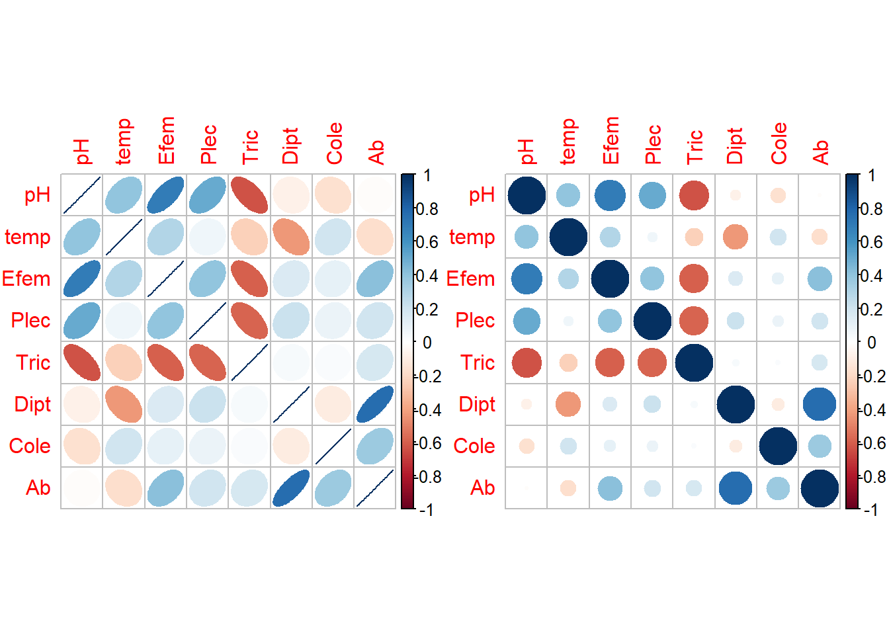
La Figura 2 muestra la relación entre las variables, a partir de figuras de elipses, además incorpora al nivel de correlación entre las parejas de variables con los coeficientes de Pearson.
# Elipses con colores
corrplot.mixed(M, upper="ellipse")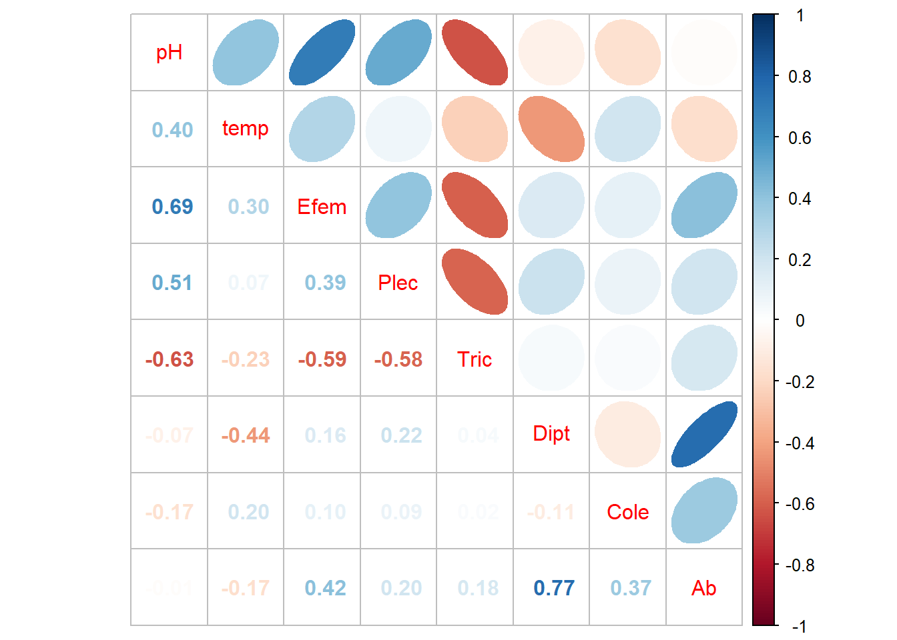
La siguiente opción de correlación (Figura 3), presenta un código más compejo que las anteriores, pero permite generar una visualización más completa de las relaciones entre parejas de variables y sus coeficientes de correlación de Pearson (también se pueden probar otros coeficientes como Spearman o Kendall).
corrplot(M, method = "circle", # Correlaciones con circulos
type = "lower", insig="blank", # Forma del panel
order = "AOE", diag = FALSE, # Ordenar por nivel de correlación
addCoef.col ="black", # Color de los coeficientes
number.cex = 0.8, # Tamaño del texto
col = COL2("RdYlBu", 200)) # Transparencia de los circulos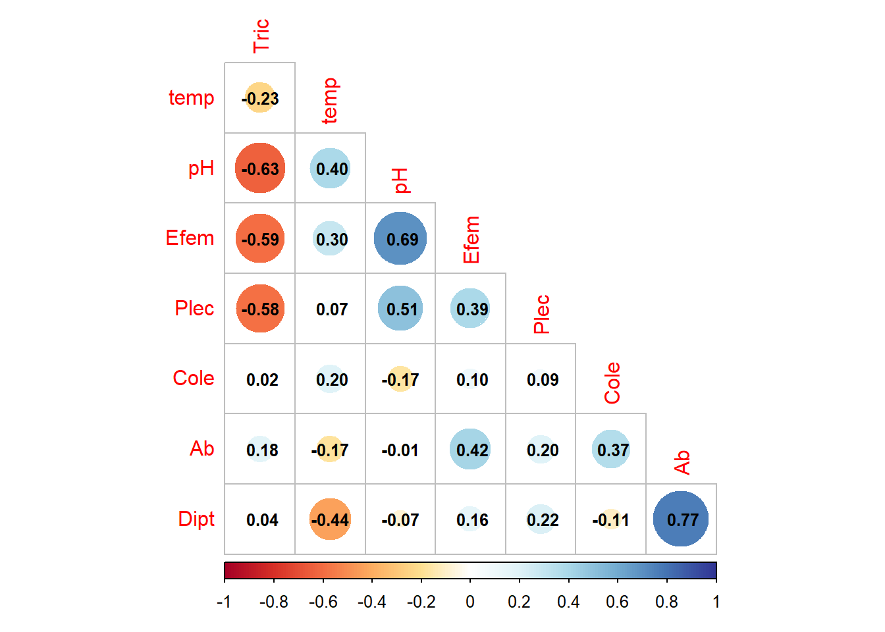
La siguiente figura de correlaciones (Figura 4) es apropiada para casos en los que tenemos muchas variables biológicas (ej. tipos de taxones) e interesa evaluar su relación con las variables ambientales.
# Elipses con colores
M1 <- cor(datos[,3:4], datos[,5:10]) # Matriz de Correlación (M)
# Elipses con colores
corrplot(M1, method = "ellipse", type="upper")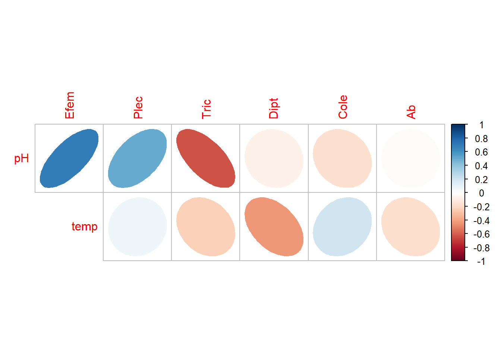
3. Figuras de Dispersión por pares de variables (pairs)
El Paquete pairs es el que permite realizar las opciones gráficas de dispersión por parejas de variables, ingresar a este enlace:
Otro enlace a pairs:
Los gráficos de pares son complementarios a los de correlación, pero permiten conocer otros detalles en las relaciones entre parejas de variables (ej. relaciones lineaes vs. suavizadas o loess). En la siguiente figura (Figura 5), además de visualizar si la dispersión de los puntos se orienta hacia una relación positiva o negativa, entre más se ajuste la línea verde (tendencia lineal), con la negativa (tendencia no lineal, suavizada o loess), se puede precisar mejor, si hay una verdadera relación lineal entre las parejas de variables en comparación.
A continuación se presenta una variante a las figuras de pares (Figura 5), que por medio de la función panel, permite incorporar otros elementos en la matriz gráfica, como histogramas para visualizar el patrón de simetría de cada variable y el valor de correlación con coeficientes como el de Pearson. Las líneas rojas definen la relación no lineal o suavizada (loess o lowess) entre las parejas de variables.
# Correlaciones de Pearson
library(SciViews)
pairs(datos[,c(3,5,7,8,10)], diag.panel = panel.hist,
upper.panel = panel.cor, lower.panel = panel.smooth)Warning in par(usr): argument 1 does not name a graphical parameter
Warning in par(usr): argument 1 does not name a graphical parameter
Warning in par(usr): argument 1 does not name a graphical parameter
Warning in par(usr): argument 1 does not name a graphical parameter
Warning in par(usr): argument 1 does not name a graphical parameter
Warning in par(usr): argument 1 does not name a graphical parameter
Warning in par(usr): argument 1 does not name a graphical parameter
Warning in par(usr): argument 1 does not name a graphical parameter
Warning in par(usr): argument 1 does not name a graphical parameter
Warning in par(usr): argument 1 does not name a graphical parameter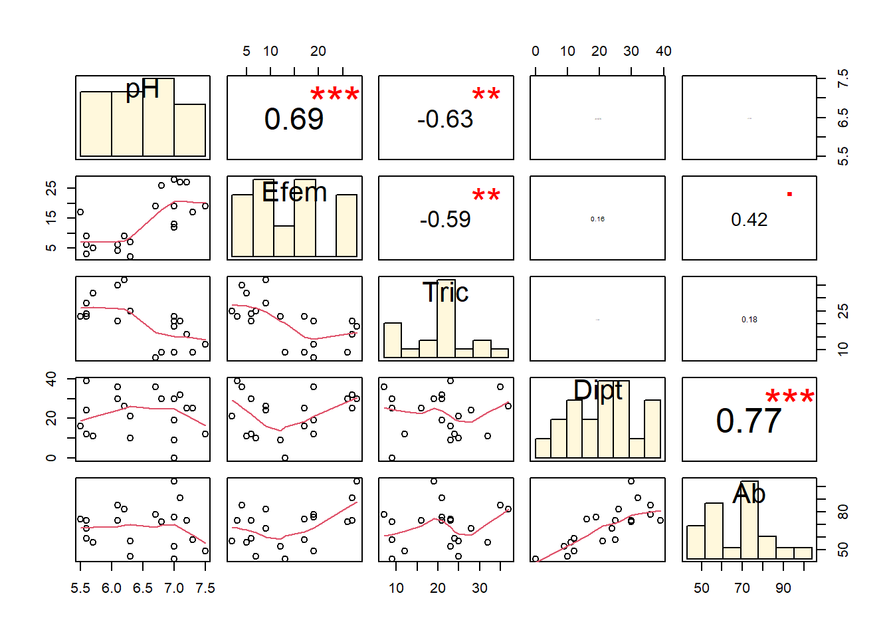
3. Histogramas
Las dos figuras que siguen (Figura 6 y ?fig-fig16a), utilizan comandos del paquete ggplot2 para visualizar de una forma más compacta a la distribución de frecuencias de la variable abundancia de insectos (AB) en las cuatro cuencas evaluadas.
# Frecuencias de abundancias por densidad
ggplot(data = datos, aes(x = Ab, color = cuenca)) +
geom_density(aes(fill = cuenca), alpha = 0.5) +
labs( y="Frecuencia", x="Abundancia") +
theme_bw() +
theme(panel.grid = element_blank()
)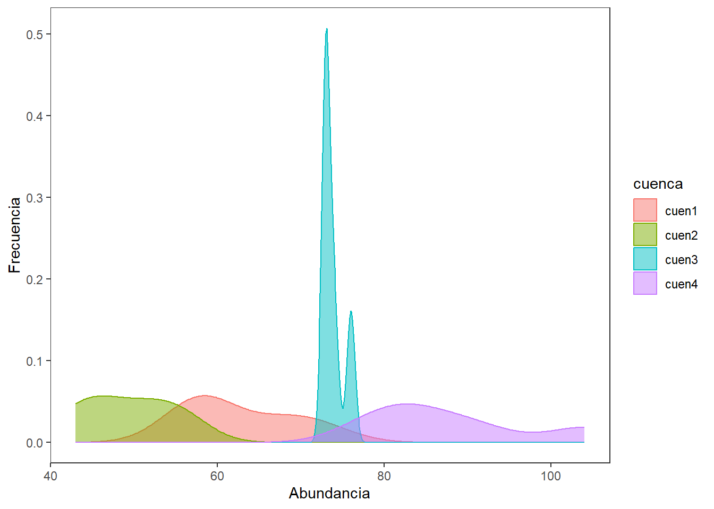
# Otra opción
ggplot(data = datos, aes(x = Ab, color = cuenca)) +
geom_density(aes(fill = cuenca)) +
facet_wrap(~ cuenca) +
theme_bw() +
theme(panel.grid = element_blank()
)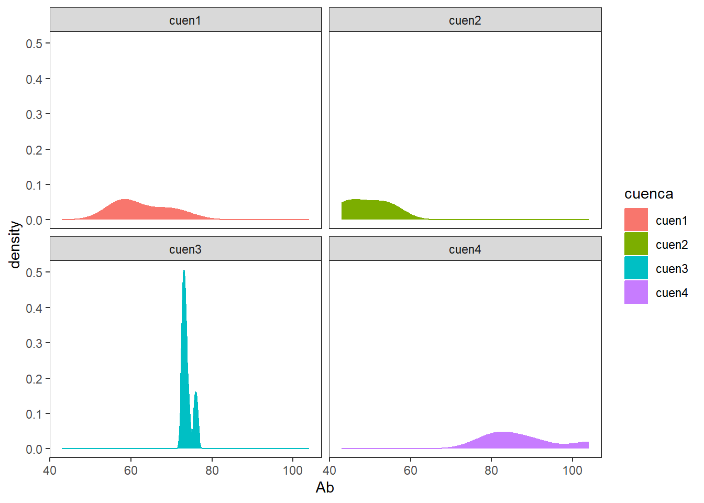
4. Dispersión X-Y
Dispersión X-Y con ggplot2
El Paquete ggplot2 es el que permite realizar las opciones gráficas de dispersión bivariados, ingresar a este enlace:
Otro enlace a ggplot2:
Las tres figuras que siguen, muestran opciones más compactas que la grafica anterior, para visualizar relaciones bivariadas en los descriptores en estudio, permitiendo también analizar el patrón de dispersión de los datos para cada cuenca evaluada (colores). La Figura 8 permite visualizar la relación lineal incluyendo bandas grises que representan los límites de confianza de la proyección realizada.
# Regresiones lineales (Esquema ggplot2)
ggplot(datos,aes(x = pH,y = Efem)) +
geom_point(aes(color = cuenca), size = 3) +
geom_smooth(method= "lm") +
theme_bw() +
theme(panel.grid = element_blank()
)`geom_smooth()` using formula = 'y ~ x'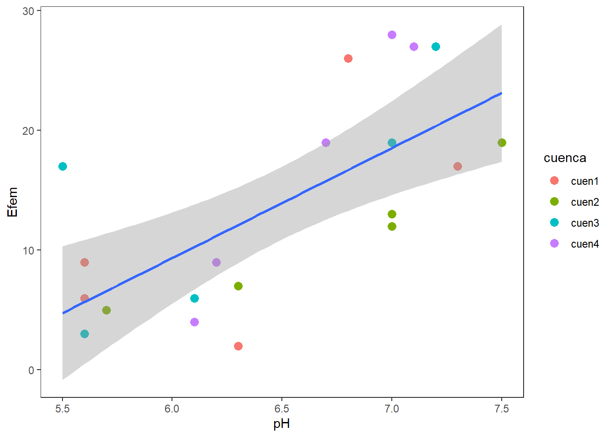
La Figura 9, a diferencia de la anterior, permite visualizar una relación suavizada en la pareja de variables en comparación. Esta relación no lineal es conocida como Loess o Lowess.
# Regresiones suavizadas - Loess o Lowess (Esquema ggplot2)
ggplot(datos,aes(x = pH, y = Efem)) +
geom_point(aes(color = cuenca), size = 3) +
geom_smooth() +
theme_bw() +
theme(panel.grid = element_blank()
)`geom_smooth()` using method = 'loess' and formula = 'y ~ x'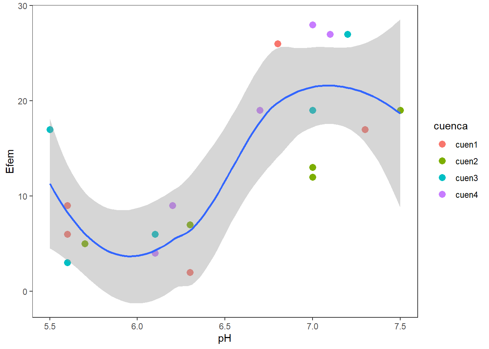
En la Figura 10 se eliminan los intervalos de confianza (bandas grises) y aumenta el suavizamiento con el comando span = 0.4.
# Regresiones suavizadas (Loess)
ggplot(datos,aes(x = pH, y = Efem)) +
geom_point(aes(color = cuenca), size = 3) +
geom_smooth(se = FALSE, span = 0.4) +
theme_bw() +
theme(panel.grid = element_blank()
)`geom_smooth()` using method = 'loess' and formula = 'y ~ x'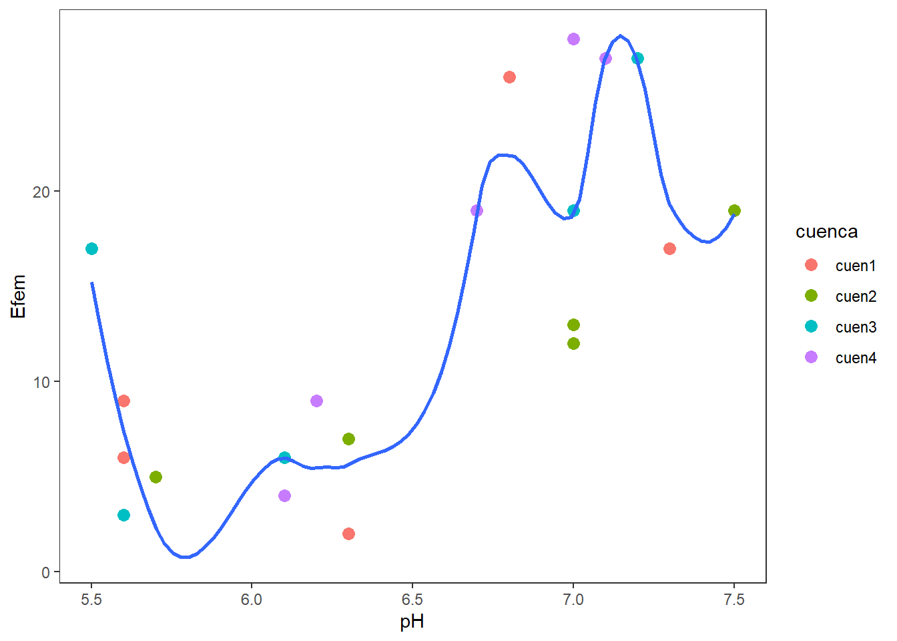
5. Cajas y Bigotes
El Paquete lattice es uno de los que permite realizar las opciones gráficas de cajas, ingresar a este enlace:
El Paquete ggplot2 presenta opciones más estéticas y robustas para estas y muchas más figuras, ingresar a este enlace:
Enlaces de paletas de colores para la edición de las figuras:
Cajas con un factor: Cuencas.
A continuación se visualiza el patrón de variación en la abundancia de los insectos (Figura 11), para las cuatro cuencas evaluadas, adicionando colores especificos, tomados de los enlaces anteriores.
# Buscar en google: colorbrewer2
ggplot(datos, aes(x=cuenca, y=Ab)) +
geom_boxplot(aes(fill = cuenca)) +
labs(x="Cuencas", y= "Abundancia de Insectos") +
scale_fill_manual(values = c('#fc8d59','#ffffbf','#99d594','#377eb8')) +
theme_bw() +
theme(panel.grid = element_blank()
)
# geom_boxplot(notch = T,... para las muescas.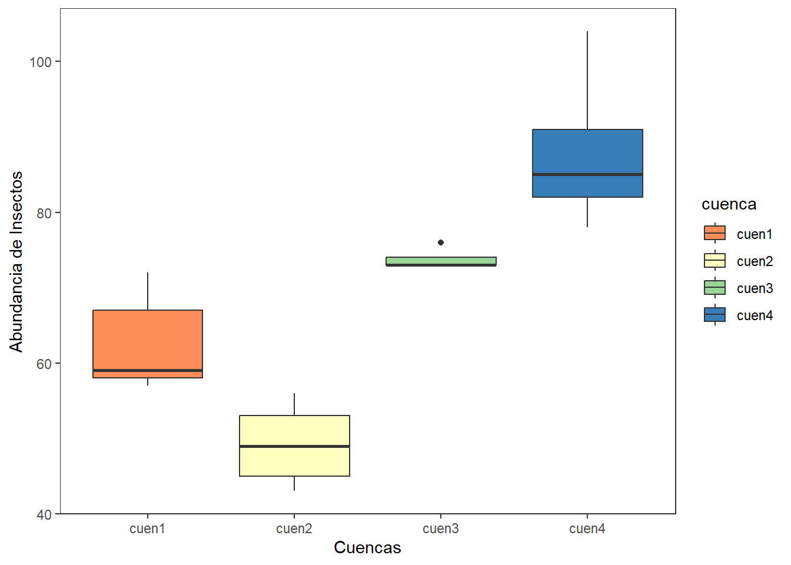
Paréntesis Base de datos de lirios (iris) para figura de violín (Figura 12). Estas figuras permiten visualizar la simetría en la distribución de las frecuencias de las variables.
# violin: como histograma acostado
ggplot(iris, aes(x = Species, y = Sepal.Length)) +
geom_violin(aes(fill = Species)) +
geom_jitter() +
scale_fill_manual(values = c('#fc8d59','#ffffbf','#99d594')) +
theme_bw() +
theme(panel.grid = element_blank()
)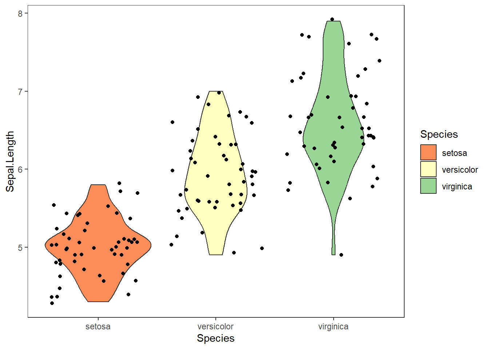
La Figura 13 muestra su versatilidad en que permite incorporar diferentes variables por cada panel presentado. Las cajas de colores representan a los grupos en comparación (cuencas).
# Figuras multivariadas de Cajas y bigotes
ggplot(melt(datos[,c(2,c(3,7,8,10))]), aes(x=variable, y=value)) +
geom_boxplot(aes(fill=cuenca)) +
scale_fill_manual(values = c('#fc8d59','#ffffbf','#99d594','#377eb8')) +
labs(x="",y="Abundancia") +
facet_wrap(~ variable,scales="free") +
theme_bw() +
theme(panel.grid = element_blank()
)Using cuenca as id variables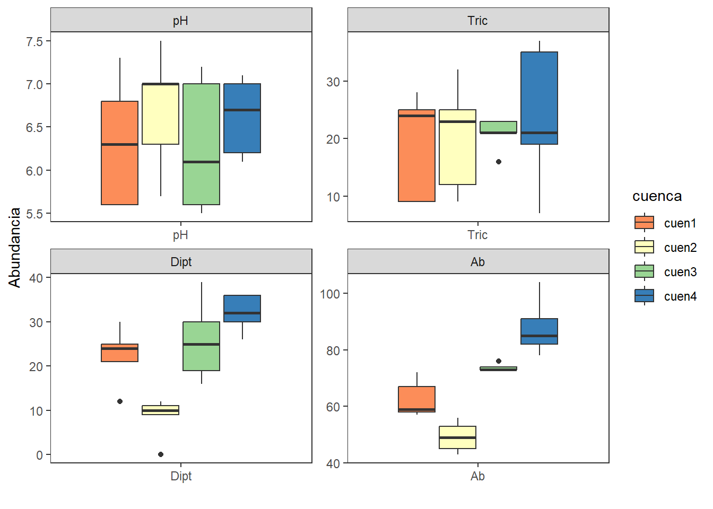
6. Coplot
Las figuras de coplot, permiten relacionar a tres variables, en donde una de ellas puede ser continua o discreta, mediante segmentaciones.En la Figura 14 se incorporan regresiones suavizadas (loess). Seis páneles en la relación pH y Efemerópteros se asocian a seis barras de temperatura, en donde el primer panel de la parte inferior se correlaciona con la primera barra de temperatura, ubicada a la izquierda y así sucesivamnte.
# Coplot con líneas de ajuste suavizado (loess)
with(datos, {
coplot(Efem~pH|temp,
panel = panel.smooth)})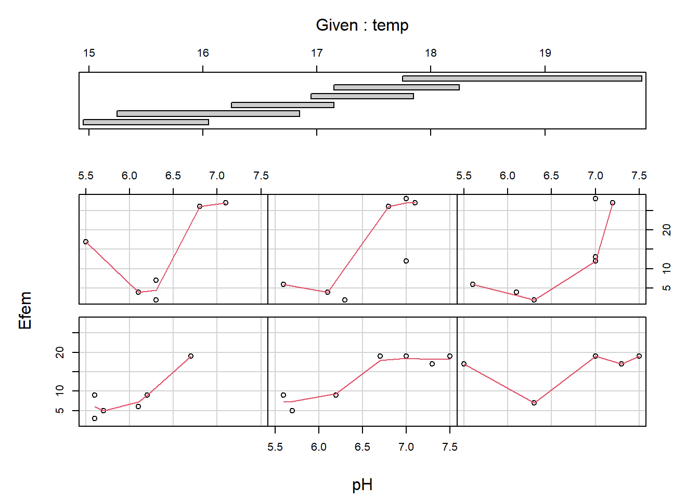
Para este caso (?fig-fig27a), se realiza una categorización de dos variables contínuas, que permitirán construir el coplot sin solapamiento de las barras de la tercera variable. Las relaciones se proyectan de forma lineal y el la siguiente ifura serán de forma suavizada.
Categorización de las variables ambientales
Este método divide la variable en tres partes iguales (terciles) utilizando los cuantiles de la distribución. En el siguiente ejercicio se crea una variable categórica llamada temp_Level.
# Categorización de la temperatura
datos <-
datos %>%
mutate(clasetemp = case_when(
temp <= quantile(temp, 1/3, na.rm = TRUE) ~ "T.Baja",
temp <= quantile(temp, 2/3, na.rm = TRUE) ~ "T.Media",
temp <= quantile(temp, 3/3, na.rm = TRUE) ~ "T.Alta"
))
# Categorización del pH
datos <-
datos %>%
mutate(clasepH = case_when(
pH <= quantile(pH, 1/3, na.rm = TRUE) ~ "pH.Bajo",
pH <= quantile(pH, 2/3, na.rm = TRUE) ~ "pH.Medio",
pH <= quantile(pH, 3/3, na.rm = TRUE) ~ "pH.Alto"
))
# Se puede resumir el nivel alto por el comando "TRUE ~ "Alta"". Opción resumida de categorizar variables
# Categorización de la temperatura
datos <-
datos %>%
mutate(clasetemp1 = cut(temp, breaks=3,
labels=c("T.Baja", "T.Media", "T.Alta")))
# Categorización del pH
datos <-
datos %>%
mutate(clasepH1 = cut(pH, breaks=3,
labels=c("pH.Bajo", "pH.Medio", "pH.Alto")))# Función para el coplot
panel.lm = function(x, y, ...) {
tmp<-lm(y~x,na.action=na.omit)
abline(tmp, lwd = 1.5, col= 2)
points(x,y, ...)}# Relación trivariada - Lineal
coplot(Efem~pH | clasetemp, pch=19,
panel = panel.lm, data=datos)
coplot(Efem~pH | clasetemp, pch=19,
panel = panel.smooth, data=datos)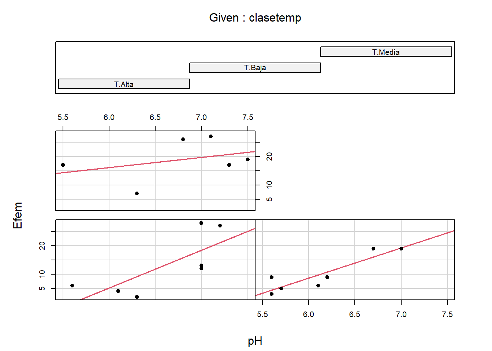
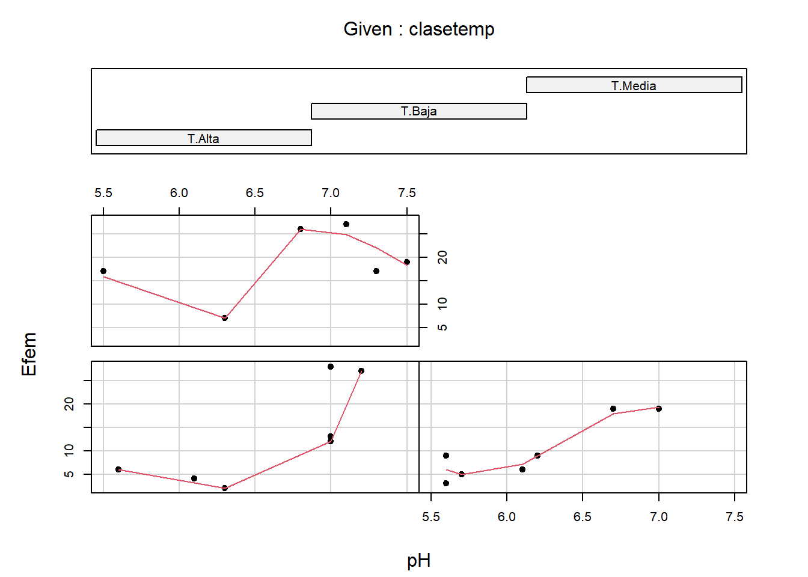
Otra forma de categorizar las variables ambientales con el resumen estadístico summary()
# Categorización de dos variables contínuas (pH y Temp)
summary(datos[,3:9]) pH temp Efem Plec Tric
Min. :5.50 Min. :15.00 Min. : 2.00 Min. :0.00 Min. : 7.00
1st Qu.:6.00 1st Qu.:15.95 1st Qu.: 6.00 1st Qu.:3.00 1st Qu.:15.00
Median :6.50 Median :17.05 Median :12.50 Median :4.00 Median :22.00
Mean :6.48 Mean :16.99 Mean :13.75 Mean :3.85 Mean :20.95
3rd Qu.:7.00 3rd Qu.:17.88 3rd Qu.:19.00 3rd Qu.:5.00 3rd Qu.:25.00
Max. :7.50 Max. :19.80 Max. :28.00 Max. :8.00 Max. :37.00
Dipt Cole
Min. : 0.00 Min. : 1.00
1st Qu.:12.00 1st Qu.: 3.00
Median :24.50 Median : 6.00
Mean :22.15 Mean : 7.70
3rd Qu.:30.00 3rd Qu.:12.25
Max. :39.00 Max. :21.00 clasetemp <- cut(datos$temp,seq(15,20,1.2),include.lowest=T,
labels = c("t.baja", "t.media1","t.media2", "t.alta"))
clasepH <- cut(datos$pH,seq(5,8,1),include.lowest=T,
labels = c("pH.bajo", "pH.medio","pH.alto"))# Cambiar etiquetas de Layers con recode_factor()
datos <-
datos %>%
mutate(cuenca = recode_factor(cuenca,
"cuen1" = "Cuenca1",
"cuen2" = "Cuenca2",
"cuen3" = "Cuenca3",
"cuen4" = "Cuenca4"))
# Crear gráfico con etiquetas de valores atípicos redondeados
ggplot(datos, aes(x = factor(cuenca), y = Ab)) +
geom_boxplot(aes(fill = clasetemp)) +
labs(
x = "Cuencas", fill = "Temperatura",
y = "Abundancia") +
scale_color_viridis(discrete = TRUE) +
facet_wrap(~ clasetemp, nrow = 1, strip.position = "top") +
theme_bw() +
theme(
panel.grid = element_blank(),
axis.text.x = element_text(angle = 45, hjust = 1)) 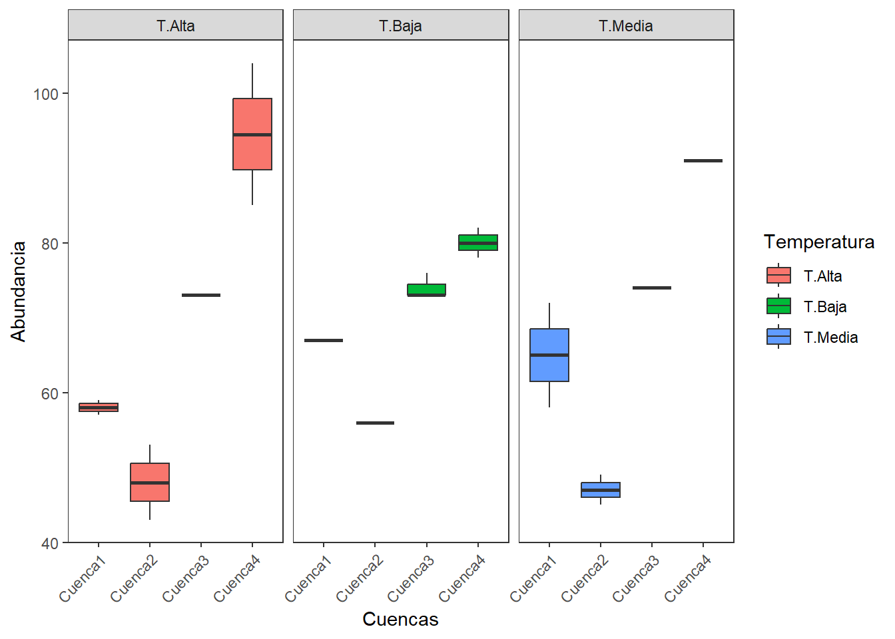
7. Figuras con estadísticos (promedios, errores, …)
El Paquete ggplot2 es uno de los que permite realizar las opciones gráficas de barras con estadísticos, ingresar a este enlace:
Exploratory Data Analysis with ggplot
Existen otros enlaces en los que se puede encontrar información complementaria para figuras de barras, como los siguientes
A continuación se muestra el procedimiento con lenguaje Tidyverse, para realizar una tabla con el resumen de diferentes insumos estadísticos, para cada grupo (cuencas) de la base de datos.
# Resumen estadístico "datos_resum"
datos_resum <- datos %>% # Base de datos resumida
group_by(cuenca) %>% # Factor o variable agrupadora
summarise(datos.m = mean(Ab), # Media de cada grupo del factor
datos.de = sd(Ab), # Desviacioes estándar de cada grupo
datos.var = var(Ab), # Varianzas de cada grupo
n.Ab = n(), # Tamaño de cada grupo
datos.ee = sd(Ab)/sqrt(n())) # Error estándar de cada grupo
# Impresión de la tabla con los datos
datos_resum %>%
dplyr::select(1:6) %>%
kbl(booktabs = F, longtable = FALSE, digits = 2) %>%
kable_classic(full_width = F, html_font = "Cambria") %>%
kableExtra::row_spec(0, bold = TRUE)| cuenca | datos.m | datos.de | datos.var | n.Ab | datos.ee |
|---|---|---|---|---|---|
| Cuenca1 | 62.6 | 6.58 | 43.3 | 5 | 2.94 |
| Cuenca2 | 49.2 | 5.40 | 29.2 | 5 | 2.42 |
| Cuenca3 | 73.8 | 1.30 | 1.7 | 5 | 0.58 |
| Cuenca4 | 88.0 | 10.12 | 102.5 | 5 | 4.53 |
La siguiente asignación (DatosPlot), incorpora las capas requeridas para realizar una figura de columnas y de líeas acotadas, que representan a los promedios y a los errores estándar respectivamente.
# Figura de promedios y errores estándar
DatosPlot<-
ggplot(datos_resum, aes(cuenca, datos.m, dev.off())) +
geom_bar(stat="identity", col="black", fill="#377eb8") +
geom_errorbar(aes(ymin=datos.m-datos.ee,
ymax=datos.m+datos.ee),width=0.2) La asignación (DatosPlot), es graficada con el siguiente comando, en el que se incluyen elementos como los rótulos de los ejes (labs) y el tema de fondo (theme_classic()) (Figura 17).
# Imprimir la figura de promedios con errores estándar
print (DatosPlot +
labs(y="Abundancia ± e.e.",
x = "cuenca") +
scale_fill_manual(values= c("#A1D5D5")) +
theme_classic())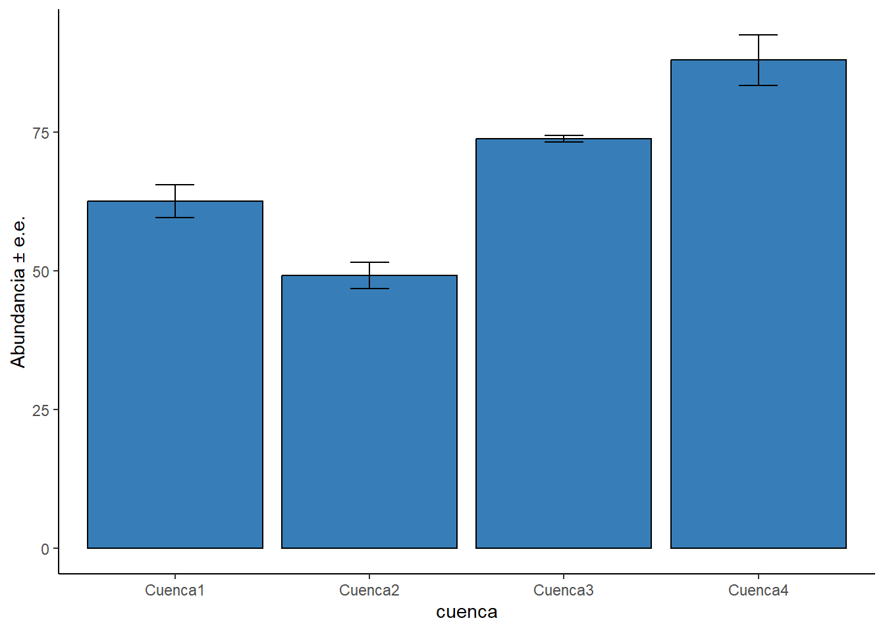
Para la siguiente figura de Cajas y Bigotes, el comando stat_boxplot(geom = "errorbar",...) permite realizar gráficas sin necesidad de extraer algunos estadísticos previamente.
# Opción de cajas y bigotes con errores estándar
ggplot(datos, aes(x=cuenca, y= Ab, fill= cuenca)) +
stat_boxplot(geom = "errorbar",width = 0.05) +
geom_boxplot(width = 0.4,
notchwidth = 0.9, outlier.colour="red",
outlier.fill="red",
outlier.size=3, outlier.alpha = 0.2) +
theme_classic() +
scale_fill_manual(values=c('#fc8d59','#ffffbf','#99d594','#377eb8')) +
labs(x = "Cuencas", y = "Abundancia ± e.e.")+
scale_y_continuous(limits = c(40,90))Warning: Removed 2 rows containing non-finite outside the scale range
(`stat_boxplot()`).
Removed 2 rows containing non-finite outside the scale range
(`stat_boxplot()`).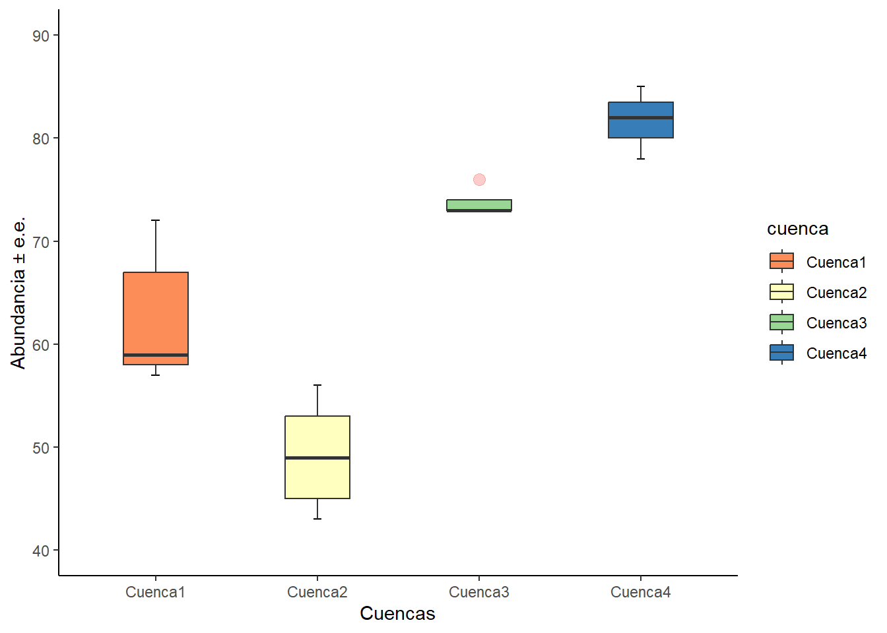
Base de datos con múltiples factores
Lo que diferencia a esta base de datos (insectos1.csv) de la anterior (insectos.csv), es que presenta a diferentes variables agrupadoras o factores, como periodos de lluvia, Gruos Funcionales Alimenticios (GF) y Muestreos. Para el siguiente ejercicio se realizará el resumen estadístico de los dos primeros factores.
# Base de datos multifactorial (insectos1)
datos1<-read_xlsx("Insectos.xlsx", sheet = "Insectos2") # Formato *xlsx
# Tabla
head(datos1) %>%
dplyr::select(1:6) %>%
kbl(booktabs = F, longtable = FALSE, digits = 2) %>%
kable_classic(full_width = F, html_font = "Cambria") %>%
kableExtra::row_spec(0, bold = TRUE)| No | Muestreo | GF | Lluvia | Ab | Biom |
|---|---|---|---|---|---|
| 1 | M1 | C-F | P1 | 98 | 56.05 |
| 2 | M2 | C-F | P1 | 198 | 52.66 |
| 3 | M3 | C-F | P2 | 45 | 11.37 |
| 4 | M4 | C-F | P2 | 51 | 25.26 |
| 5 | M5 | C-F | P2 | 3 | 0.36 |
| 6 | M6 | C-F | P2 | 69 | 23.59 |
# Resumen estadístico "datos_resum"
datos_resum <-
datos1 %>% # Base de datos resumida
group_by(Lluvia,GF) %>% # Factor o variable agrupadora
summarise(datos.m = mean(Biom), # Media de cada grupo del factor
datos.de = sd(Biom), # Desviacioes estándar de cada grupo
datos.var = var(Biom), # Varianzas de cada grupo
n.Biom = n(), # Tamaño de cada grupo
datos.ee = sd(Biom)/sqrt(n())) # Error estándar de cada grupo`summarise()` has grouped output by 'Lluvia'. You can override using the
`.groups` argument.# Tabla
head(datos_resum) %>%
dplyr::select(1:6) %>%
kbl(booktabs = F, longtable = FALSE, digits = 2) %>%
kable_classic(full_width = F, html_font = "Cambria") %>%
kableExtra::row_spec(0, bold = TRUE)| Lluvia | GF | datos.m | datos.de | datos.var | n.Biom |
|---|---|---|---|---|---|
| P1 | C-F | 37.04 | 30.03 | 901.95 | 3 |
| P1 | C-R | 31.66 | 32.08 | 1029.23 | 3 |
| P1 | D | 361.42 | 120.05 | 14411.19 | 3 |
| P1 | R | 53.45 | 69.81 | 4872.77 | 3 |
| P1 | T | 190.14 | 295.86 | 87532.98 | 3 |
| P2 | C-F | 14.36 | 10.23 | 104.73 | 5 |
Las asignaciones f1 y f2, corresponden a las mismas figuras bifactoriales, en donde la primera se muestra con pocos ajustes de sus ejes y fondo, comparada a la segunda que presenta una mayor edición. Finalmente el comando grid.arrange permite graficar a las dos figuras en un mismo panel.
# Figura 1 (f1)
f1 = ggplot(datos_resum, aes(x=GF, y=datos.m, fill=Lluvia)) +
geom_bar(stat="identity", color="black",
position=position_dodge()) +
geom_errorbar(aes(ymin=datos.m, ymax=datos.m+datos.de), width=.2,
position=position_dodge(.9))
# f2: Otro formato de figura bifactorial - theme_classic
f2 = f1+labs(title="Biomasa por GF",
x="Grupos Funcionales - GF",
y = "Biomasa")+
theme_classic() +
scale_fill_manual(values=c('#E69F00','#999999'))
# Impresión de un panel con las dos figuras de forma horizontal (f1 y f2)
grid.arrange (f1, f2, ncol=2)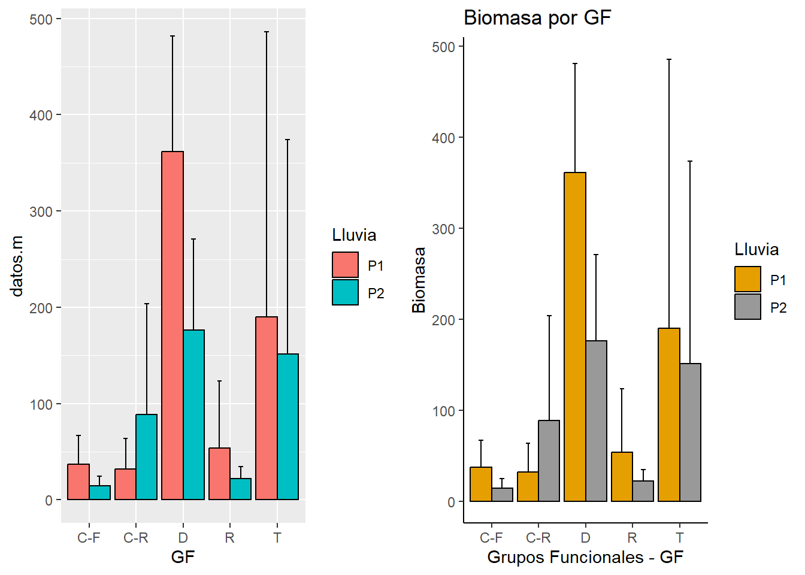
Cambiando la ubicación por columnas ncol por la de filas nrow, se cambia la posición de las figuras anteriores en el mismo panel.
# Impresión de un panel con las dos figuras de forma vertical (p1 y p2)
grid.arrange (f1, f2, nrow=2)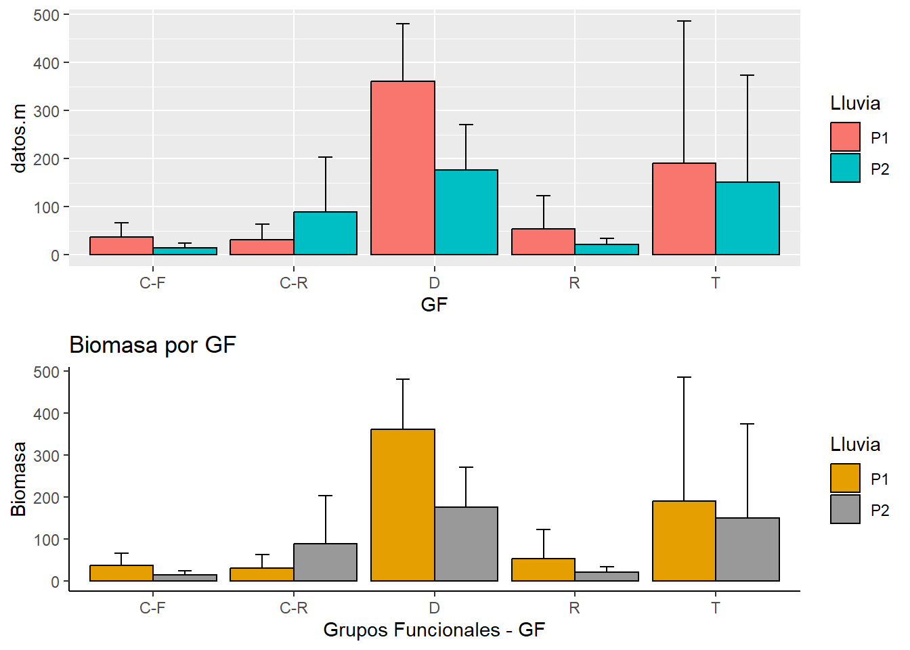
B. Caso guiado: Mesozooplancton estuarino

El mesozooplancton constituye un componente fundamental de las redes tróficas de ambientes acuáticos, respondiendo rápidamente a cambios en parámetros ambientales asociados como salinidad, temperatura y disponibilidad de nutrientes, entre otros.
A continuación se analiza un conjunto de datos de abundancia de organismos zooplanctónicos tomados de Balentina et al. (2025), con el propósito de explorar su estructura mediante herramientas de visualización gráfica. Se abordarán representaciones que permiten identificar patrones de dominancia, distribución de abundancias y variabilidad entre unidades de muestreo o sitios. Se introduce además en un enfoque práctico para transformar datos ecológicos en representaciones visuales informativas, facilitando la interpretación de la dinámica comunitaria en este tipo de ecosistemas altamente fluctuantes.
Resumen
El presente ejercicio tiene por objeto, brindar pautas generales para el manejo y visualización de datos biológicos en el lenguaje tidyverse de R. Se realizan algunas operaciones generales usando una base de datos de mesozooplancton estuarino, que incorpora variables biológicas y ambientales. Se realizarán ejercicios con los comandos generales de tidyverse en el manejo y visualización de datos, utilizando como ejemplo la base de datos de plancton en un estuario de Colombia (biol).
La base de datos Riqueza tiene 498 registros y 8 columnas, incluyendo:
- Variables categóricas o factores:
Station(Estación, numérica pero categórica en contexto)Size(Tamaños de malla del plancton)Layers(Capas o estratos en el gradiente de profundidad)Groups(Grupos de plancton)
- Variables cuantitativas:
Abundance(Abundancia de los grupos de mesozooplancton)Temperature(Temperatura del agua)Salinity(Salinidad del agua)Density(Densidad de organismos)
Cargar paquetes
Para trabajar con tidyverse, primero se debe instalar y cargar los paquetes requeridos.
# Librerías requeridas
library(tidyverse)
library(dplyr)
library(gapminder)
library(kableExtra) # Para la edición de tablas
library(readxl) # Cargar bases de Excel
require(stats) # No se requiere instalar
library(lattice) # No se requiere instalar
library(ggrepel) # insertar rótulos a los puntos
require(SciViews) # Fig. dispersión con coef. de pearson
library(plotrix) # Figuras de cajas con múltiples variables
library(corrplot) # Figuras de elipses
library(psych) # Matrices de correlación para figuras de elipses
library(reshape) # Figuras de cajas con múltiples variables
library(reshape2) # Figuras de cajas con múltiples variables
library(gridExtra) # Para figuras estadísticas (varios factores)
library(grid) # Para figuras estadísticas (varios factores)
library(ggplot2) # Paquete gráfico
library(forcats) # Para manipulación de factores
library(viridis) # Opciones de paletas de colores
library(vegan) # Estimadores de diversidadCarga y exploración de datos
La siguiente base presenta una estructura vertical (formato largo), que puede ser apropiada para visualizar patrones generales de abundancia o de las variables ambientales por cada factor o variable categórica (Station, Size, Layers y Groups). Patrones multivariados en los que se requiera visualizar la relación entre cada taxón las variables ambientales, exigen un ajuste de la base de datos a un formato ancho (biol1), en donde cada taxón representa una columna diferente.
# Cargar datos desde Excel
biol <- read_xlsx("plancton.xlsx", sheet = "Riqueza")
# Explorar estructura
# glimpse(biol)
# summary(biol)
# tabla con los datos
head(biol) %>%
kbl(booktabs = TRUE, longtable = FALSE, digits = 2) %>%
kable_classic(full_width = F) %>%
kableExtra::row_spec(0, bold = TRUE)| Station | Size | Layers | Groups | Abundance | Temperature | Salinity | Density |
|---|---|---|---|---|---|---|---|
| 2 | 250 μm | Surface | Quetognatos | 0 | 30.30 | 34.70 | 21.42 |
| 2 | 250 μm | Surface | Sergestidae | 0 | 29.41 | 25.83 | 15.09 |
| 2 | 250 μm | Surface | Luciferidae | 0 | 29.59 | 12.39 | 5.73 |
| 2 | 250 μm | Surface | Calanoida | 32 | 30.30 | 34.70 | 21.42 |
| 2 | 250 μm | Surface | Cyclopoida | 4 | 29.41 | 25.83 | 15.09 |
| 2 | 250 μm | Surface | Harpacticoida | 2 | 29.59 | 12.39 | 5.73 |
Base de datos en formato ancho
El siguiente procedimiento permitirá organizar la base de datos de tal forma que pueda ser utilizada en diseños multivariados. Normalmente encontrarémos las bases de datos en formato ancho, para esos casos, no será necesario realizar el siguiente procedimiento.
# Procesamiento para ajustar los datos en formato ancho
biol1 <-
biol %>%
# Abreviaturas de los taxones
mutate(Abrev = abbreviate(Groups, minlength = 4)) %>%
# Variables a factores
mutate(across(c(Station, Size, Layers), as.factor)) %>%
# Agrupamiento para el formato ancho
group_by(Station, Size, Layers) %>%
# Promedios de las variables ambientales
summarize(
across(c(Temperature, Salinity, Density), ~round(mean(.),2)),
# Totales de las abundancias por cada factor
Abundance = list(setNames(tapply(Abundance, Abrev,sum,
default = 0), unique(Abrev))),
# Corregir algunos errores del agrupamiento
.groups = "drop") %>%
# Separar las abundancias en las columnas de cada taxon
unnest_wider(Abundance) %>%
# Crear columna Ref, tomando iniciales de tres factores
mutate(
Ref = paste0(substr(Station, 1, 2),
substr(Size, 1, 1),
substr(Layers, 1, 1))) %>%
# Pasar la columna de referencia (consec) a la 1a columna
select(Ref, everything()) %>%
# Crear la columna Ab con la suma de las columnas de taxones
mutate(
# Suma de las columnas especificadas (Ab)
Ab = rowSums(across(Qtgn:Otrs), na.rm = TRUE)
) %>%
# Mover la columna de abundancias (AB)
select(Ref,Station,Size,Layers,Temperature,
Salinity,Density,Ab, everything())
# tabla con los datos
head(biol1, 4) %>%
dplyr::select(1:10) %>%
kbl(booktabs = TRUE, longtable = FALSE) %>%
kable_classic(full_width = F) %>%
kableExtra::row_spec(0, bold = TRUE)| Ref | Station | Size | Layers | Temperature | Salinity | Density | Ab | Qtgn | Srgs |
|---|---|---|---|---|---|---|---|---|---|
| 22D | 2 | 250 μm | Depth | 29.88 | 25.26 | 14.40 | 14030 | 12672 | 408 |
| 22S | 2 | 250 μm | Surface | 29.75 | 23.27 | 13.35 | 5210 | 568 | 20 |
| 25D | 2 | 500 μm | Depth | 29.40 | 19.97 | 10.53 | 434 | 50 | 0 |
| 25S | 2 | 500 μm | Surface | 29.99 | 28.66 | 17.02 | 10697 | 10 | 0 |
1. Figuras de elipses
Las figuras de correlación realizadas con el paquete corrplot, son una buena opción para evaluar los patrones generales de relaciones positivas (azul) y/o negativas (rojo), entre parejas de variables. Funcionan para objetivos orientados en la relaciones de (1) variables biológicas, (2) variables ambientales y (3) variables biológicas con las ambientales.
# Selección de variables biológicas y ambientales
# str(biol1)
# Variables ambientales columnas 6 a 7, biológicas columnas 8 a 20
# Elipses con colores
M <- cor(biol1[,8:20]) # Matriz de Correlación (M)La Figura 21 muestra la relación entre las variables, a partir de figuras de elipses y de circulos.
# Elipses con colores
corrplot(M, method = "ellipse") # Figura de correlaciones con elipses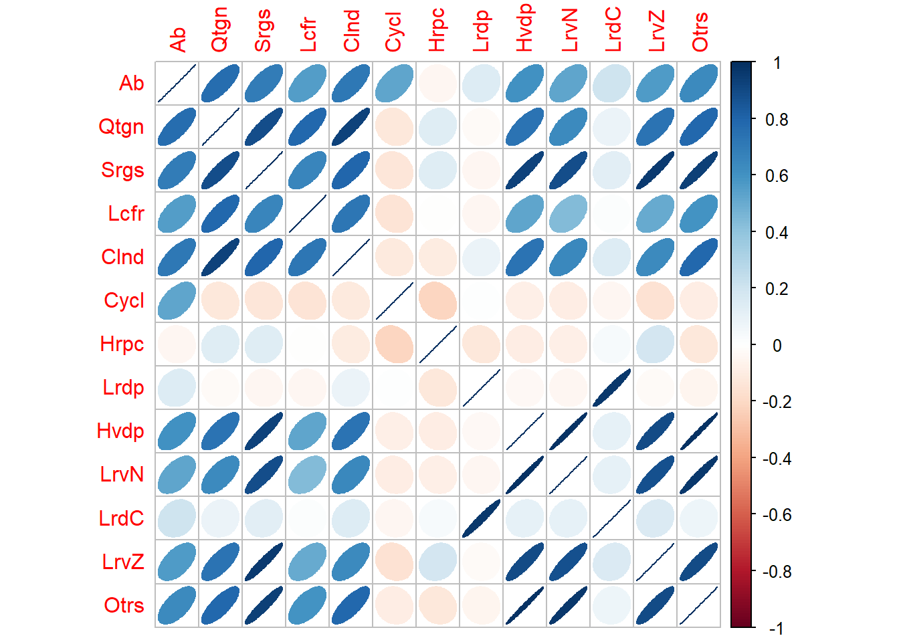
La Figura 22 muestra la relación entre las variables, a partir de figuras de elipses, además incorpora al nivel de correlación entre las parejas de variables con los coeficientes de Pearson.
# Elipses con colores
corrplot.mixed(M, upper="ellipse")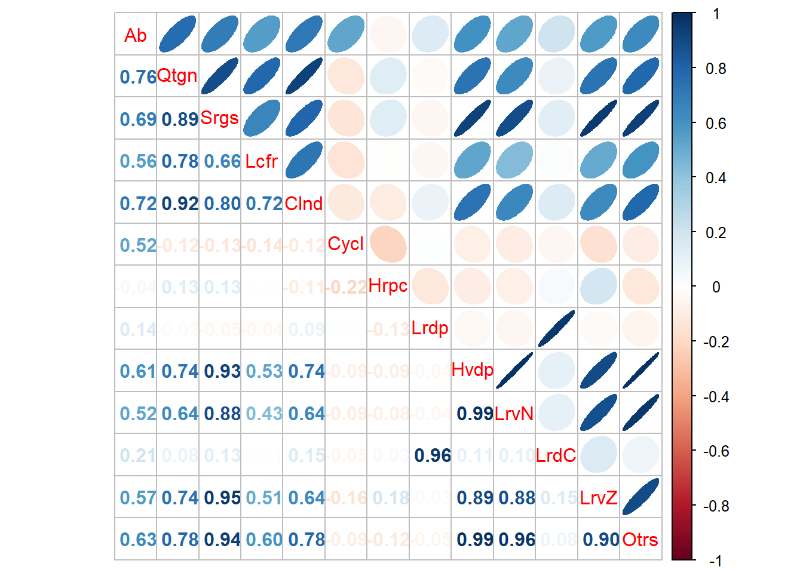
La siguiente opción de correlación (Figura 23), presenta un código más compejo que las anteriores, pero permite generar una visualización más completa de las relaciones entre parejas de variables y sus coeficientes de correlación de Pearson (también se pueden probar otros coeficientes como Spearman o Kendall).
corrplot(M, method = "circle", # Correlaciones con circulos
type = "lower", insig="blank", # Forma del panel
order = "AOE", diag = FALSE, # Ordenar por nivel de correlación
addCoef.col ="black", # Color de los coeficientes
number.cex = 0.8, # Tamaño del texto
col = COL2("RdYlBu", 200)) # Transparencia de los circulos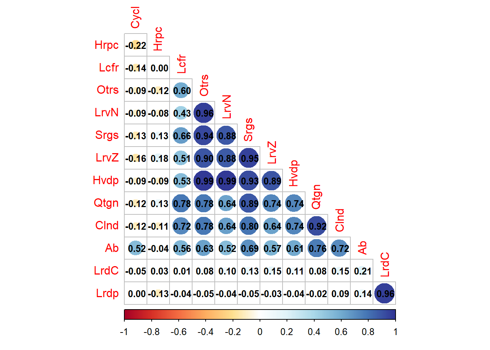
La siguiente figura de correlaciones (Figura 24) es apropiada para casos en los que tenemos muchas variables biológicas (ej. tipos de taxones) e interesa evaluar su relación con las variables ambientales.
# Elipses con colores
M1 <- cor(biol1[,5:7], biol1[,8:20]) # Matriz de Correlación (M)
# Elipses con colores
corrplot(M1, method = "ellipse", type="upper")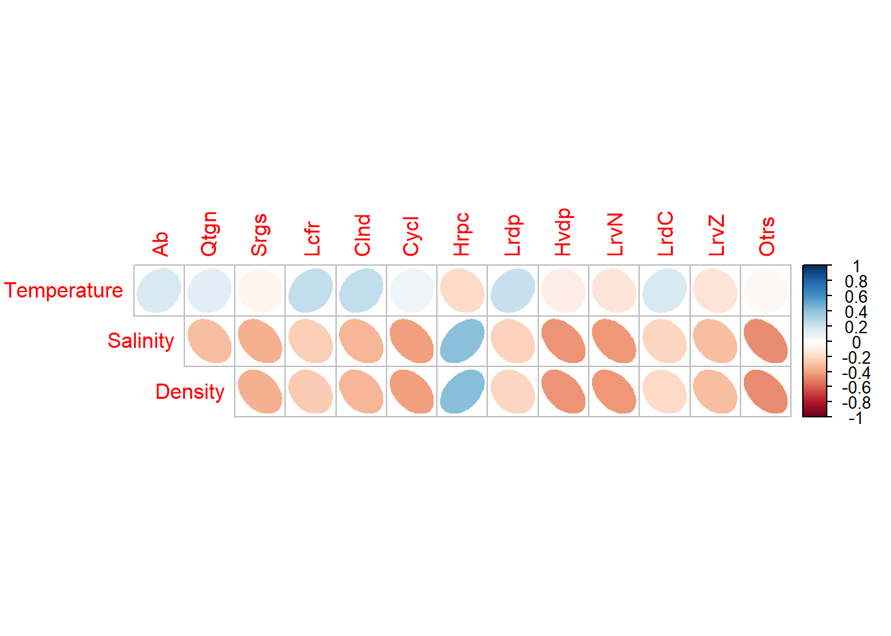
2. Figuras de Dispersión por pares de variables (pairs)
A continuación se presenta una variante a las figuras de pares (Figura 25), que por medio de la función panel, permite incorporar otros elementos en la matriz gráfica, como histogramas para visualizar el patrón de simetría de cada variable y el valor de correlación con coeficientes como el de Pearson. Las líneas rojas definen la relación no lineal o suavizada (loess o lowess) entre las parejas de variables.
# Correlaciones de Pearson
library(SciViews)
pairs(biol1[,c(5:7)], diag.panel = panel.hist,
upper.panel = panel.cor, lower.panel = panel.smooth)Warning in par(usr): argument 1 does not name a graphical parameter
Warning in par(usr): argument 1 does not name a graphical parameter
Warning in par(usr): argument 1 does not name a graphical parameter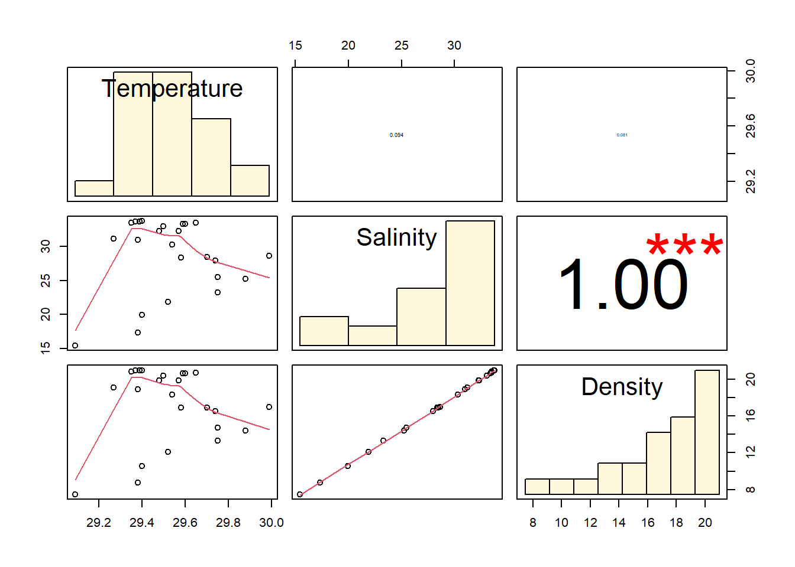
3. Histogramas
Las dos figuras que siguen (Figura 26 y Figura 27), utilizan comandos del paquete ggplot2 para visualizar de una forma más compacta a la distribución de frecuencias de la variable abundancia de insectos (AB) en las cuatro cuencas evaluadas.
# Frecuencias de abundancias por densidad
ggplot(data = biol1, aes(x = Ab, color = Layers)) +
geom_density(aes(fill = Layers), alpha = 0.5) +
labs( y="Frecuencia", x="Abundancia") +
theme_bw() +
theme(panel.grid = element_blank()
)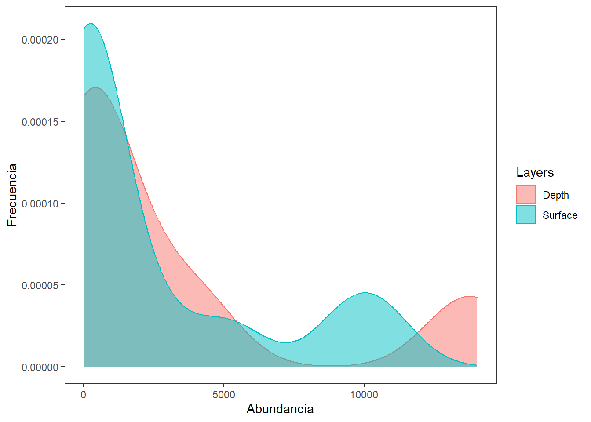
# Otra opción
ggplot(data = biol1, aes(x = Ab, color = Layers)) +
geom_density(aes(fill = Layers)) +
facet_wrap(~ Size) +
theme_bw() +
theme(panel.grid = element_blank()
)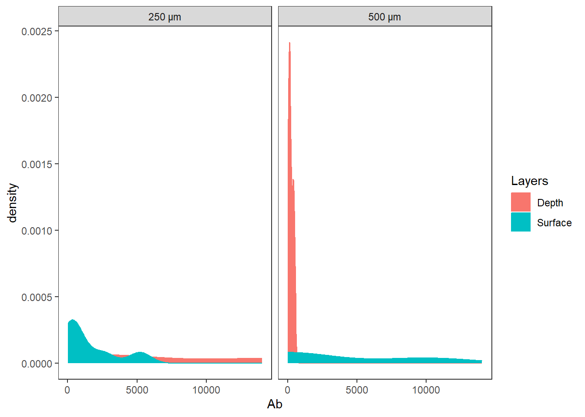
4. Dispersión X-Y
Dispersión X-Y con ggplot2
Las tres figuras que siguen, muestran opciones más compactas que la grafica anterior, para visualizar relaciones bivariadas en los descriptores en estudio, permitiendo también analizar el patrón de dispersión de los datos para cada cuenca evaluada (colores). La Figura 28 permite visualizar la relación lineal incluyendo bandas grises que representan los límites de confianza de la proyección realizada.
# Regresiones lineales (Esquema ggplot2)
ggplot(biol1,aes(x = Density, y = Ab)) +
geom_point(aes(color = Layers), size = 3) +
geom_smooth(method= "lm") +
theme_bw() +
theme(panel.grid = element_blank()
)`geom_smooth()` using formula = 'y ~ x'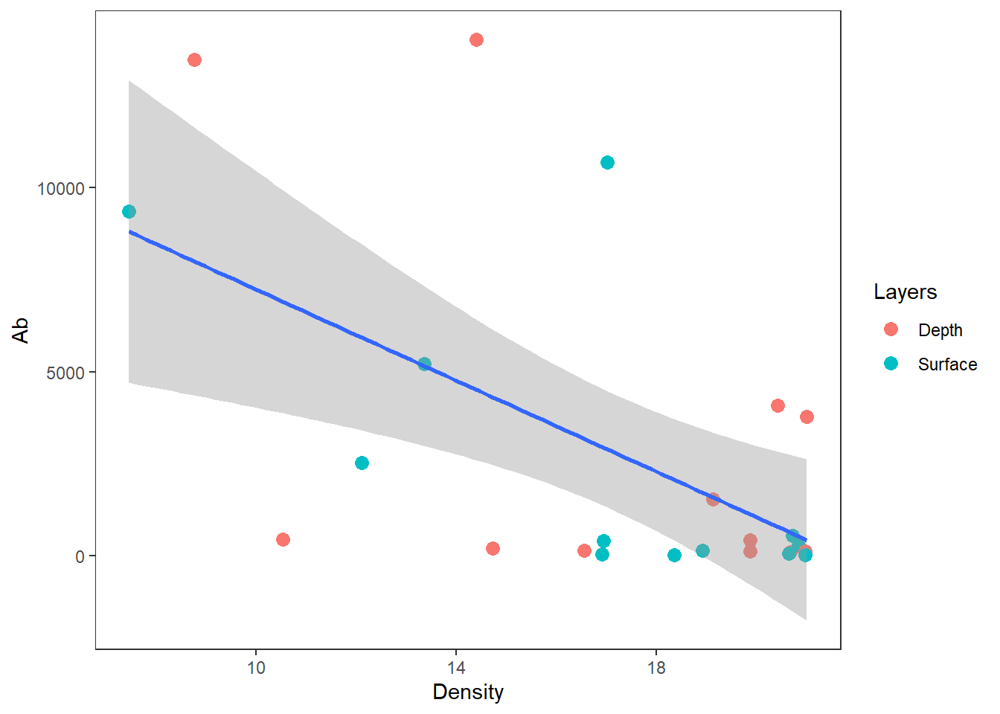
La Figura 29, a diferencia de la anterior, permite visualizar una relación suavizada en la pareja de variables en comparación. Esta relación no lineal es conocida como Loess o Lowess.
# Regresiones suavizadas - Loess o Lowess (Esquema ggplot2)
ggplot(biol1,aes(x = Density, y = Ab)) +
geom_point(aes(color = Layers), size = 3) +
geom_smooth() +
theme_bw() +
theme(panel.grid = element_blank()
)`geom_smooth()` using method = 'loess' and formula = 'y ~ x'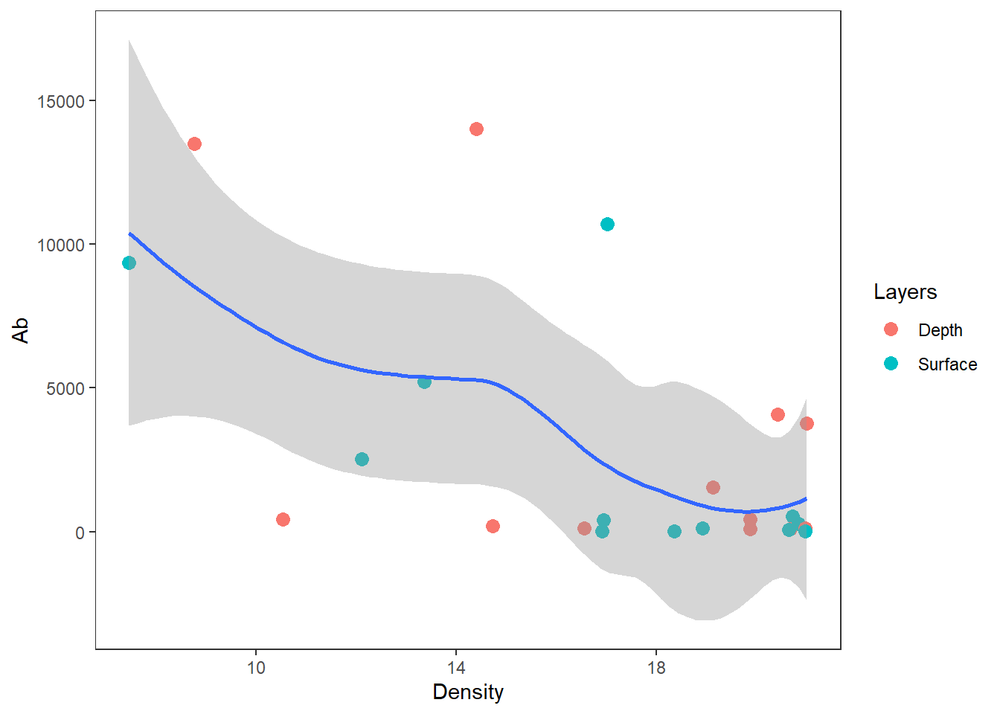
En la Figura 30 se eliminan los intervalos de confianza (bandas grises) y aumenta el suavizamiento con el comando span = 0.4.
# Regresiones suavizadas (Loess)
ggplot(biol1,aes(x = Density, y = Ab)) +
geom_point(aes(color = Layers), size = 3) +
geom_smooth(se = FALSE, span = 0.5) +
theme_bw() +
theme(panel.grid = element_blank()
)`geom_smooth()` using method = 'loess' and formula = 'y ~ x'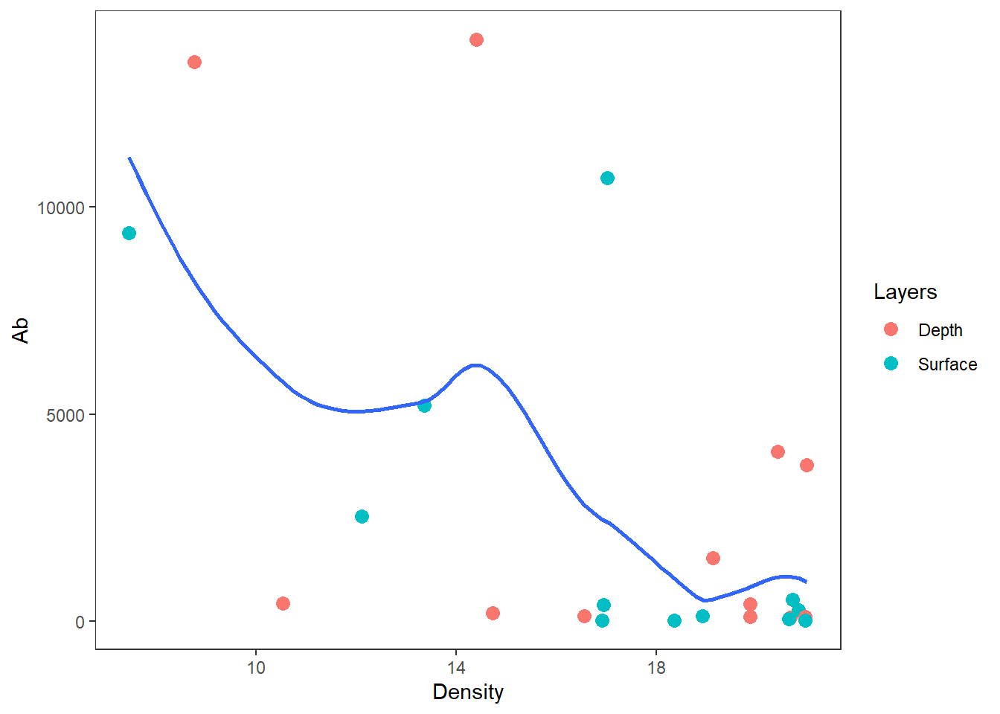
5. Cajas y Bigotes
Cajas con un factor: Estaciones.
A continuación se visualiza el patrón de variación en la abundancia de los insectos (Figura 31), para las cuatro cuencas evaluadas, adicionando colores especificos, tomados de los enlaces anteriores.
# Convertir variables a factores en caso que se requiera
biol1 <-
biol1 %>%
mutate(across(c(Station, Size, Layers), as.factor))
# Gráfico de caja de la abundancia por estación
ggplot(biol, aes(x = factor(Station), y = Abundance)) +
geom_boxplot(aes(fill = factor(Station))) +
scale_y_continuous(trans = "log10") + # Aplicar la transformación logarítmica
scale_fill_manual(values = c('#fc8d59','#ffffbf','#99d594','#377eb8','#e78ac3','#7570b3')) +
labs(title = "Distribución de la Abundancia por Estación",
x = "Estaciones", fill = "Estaciones",
y = expression(log[10]~(Abundancia~indv.~m^-3))
) +
theme_bw() +
theme(
panel.gridr = element_blank()
)Warning in scale_y_continuous(trans = "log10"): log-10 transformation
introduced infinite values.Warning: Removed 247 rows containing non-finite outside the scale range
(`stat_boxplot()`).Warning in plot_theme(plot): The `panel.gridr` theme element is not defined in
the element hierarchy.# geom_boxplot(notch = T,... para las muescas.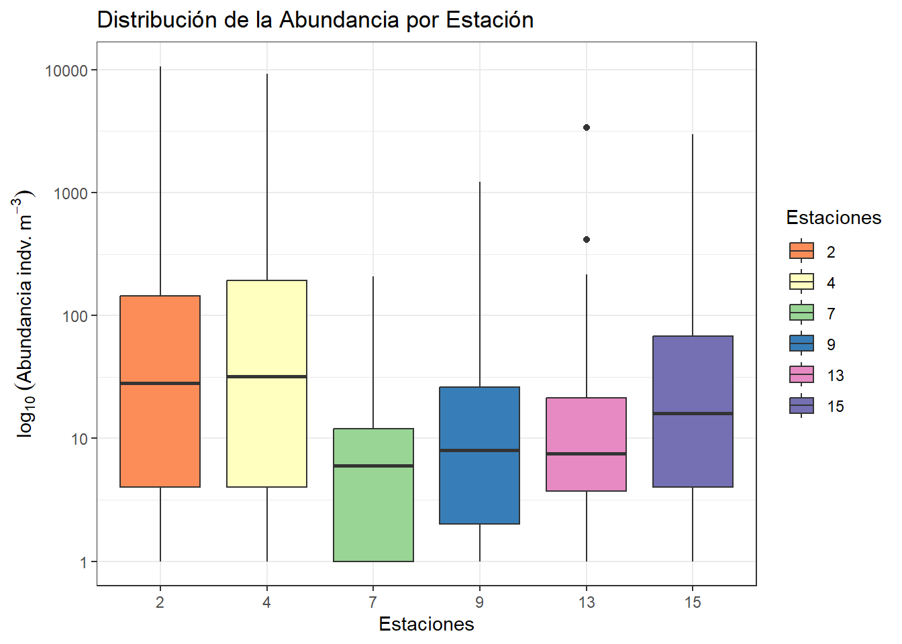
Cajas con dos factores: Estaciones y capas.
Las dos figuras a continuación comparan el patrón de abundancia para la base de datos original que está en formato largo (biol) y en formato ancho (biol1). Analizar a que se deben las diferencias.
library(forcats) # Para manipulación de factores
# Cambiar etiquetas de Layers con recode_factor()
biol <-
biol %>%
mutate(Layers = recode_factor(Layers,
"Depth" = "Profunda",
"Surface" = "Superficial"))
# Gráfico de caja de la abundancia por estación
ggplot(biol, aes(x = factor(Station), y = Abundance)) +
geom_boxplot(aes(fill = Layers)) +
scale_y_continuous(trans = "log10") + # Aplicar la transformación logarítmica
labs(title = "Distribución de la Abundancia por Estación",
x = "Estaciones", fill = "Capas",
y = expression(log[10]~(Abundancia~indv.~m^-3))
) +
theme_bw()+
theme(
panel.grid = element_blank()
)Warning in scale_y_continuous(trans = "log10"): log-10 transformation
introduced infinite values.Warning: Removed 247 rows containing non-finite outside the scale range
(`stat_boxplot()`).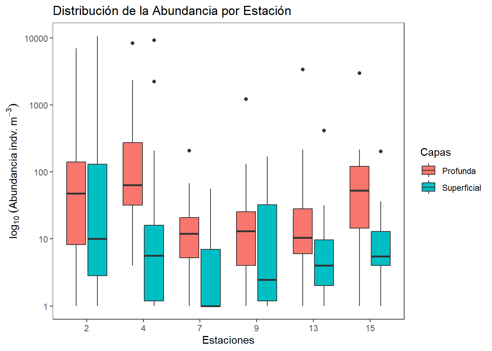
library(forcats) # Para manipulación de factores
# Cambiar etiquetas de Layers con recode_factor()
biol1 <-
biol1 %>%
mutate(Layers = recode_factor(Layers,
"Depth" = "Profunda",
"Surface" = "Superficial"))
# Gráfico de caja de la abundancia por estación
ggplot(biol1, aes(x = factor(Station), y = Ab)) +
geom_boxplot(aes(fill = Layers)) +
scale_y_continuous(trans = "log10") + # Aplicar la transformación logarítmica
labs(title = "Distribución de la Abundancia por Estación",
x = "Estaciones", fill = "Capas",
y = expression(log[10]~(Abundancia~indv.~m^-3))
) +
theme_bw()+
theme(
panel.grid = element_blank()
)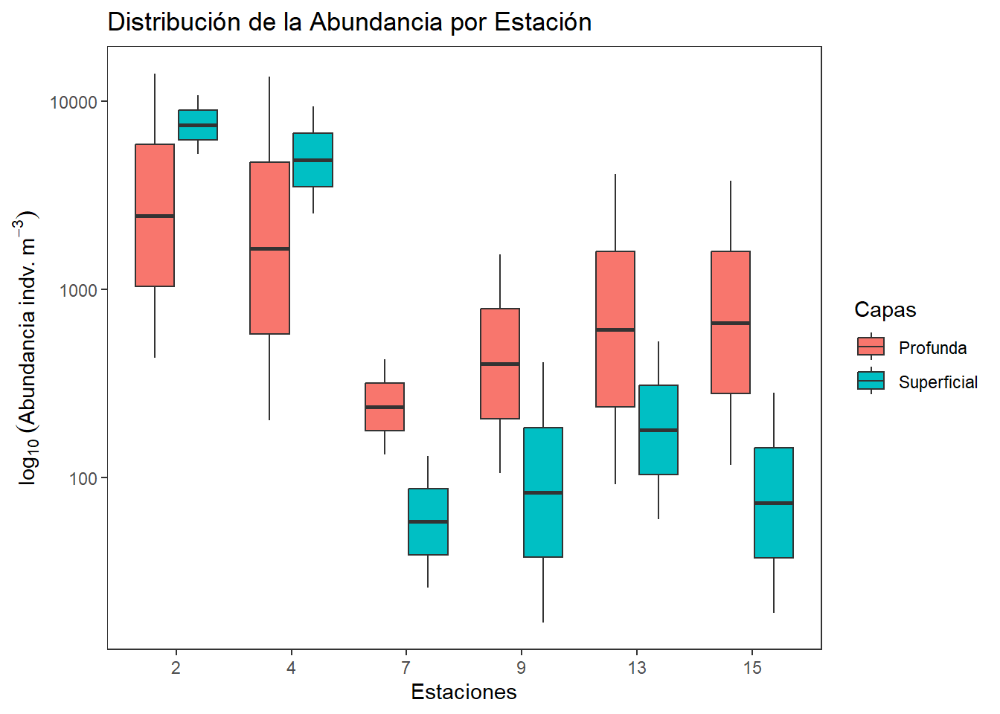
# facet_wrap(~ Layers, scales = "free") # Paneles por variableCajas con diferentes variables: Ambientales
La Figura 32 muestra su versatilidad en que permite incorporar diferentes variables por cada panel presentado. Las cajas de colores representan a los grupos en comparación (cuencas).
# Figuras multivariadas de Cajas y bigotes
ggplot(melt(biol1[,c(2,5:7)]), aes(x=Station, y=value)) + # Usar Station en el eje X
geom_boxplot(aes(fill=Station)) +
scale_y_continuous(trans = "log10") + # Aplicar la transformación logarítmica
scale_color_viridis(discrete = TRUE) +
labs(title = "Distribución de la Abundancia por Estación",
x = "Estaciones", fill = "Estaciones",
y = expression(log[10]~(Abundancia~indv.~m^-3))
) +
facet_wrap(~ variable, scales = "free") + # Paneles por variable
theme_bw() +
theme(
panel.grid = element_blank()
)Using Station as id variables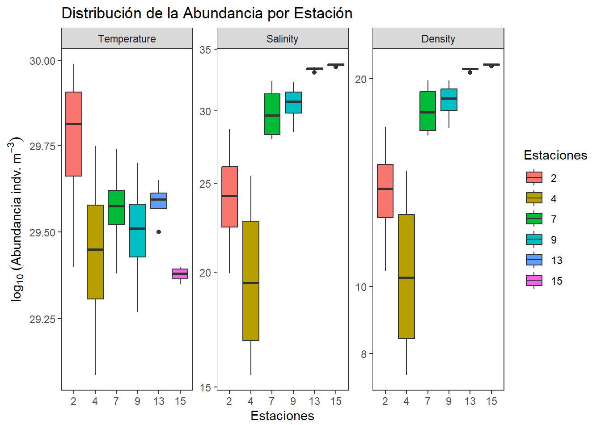
6. Coplot
Categorización de dos variables ambientales (Temperatura y Salinidad)
Este método divide la variable en tres partes iguales (terciles) utilizando los cuantiles de la distribución. En el siguiente ejercicio se crean dos variables categóricas llamadas claseTemp y claseSal.
# Categorización de la temperatura
biol <-
biol %>%
mutate(claseTemp = case_when(
Temperature <= quantile(Temperature, 1/3, na.rm = TRUE) ~ "T.Baja",
Temperature <= quantile(Temperature, 2/3, na.rm = TRUE) ~ "T.Media",
Temperature <= quantile(Temperature, 3/3, na.rm = TRUE) ~ "T.Alta"
))
# Categorización de la salinidad
biol <-
biol %>%
mutate(claseSal = case_when(
Salinity <= quantile(Salinity, 1/3, na.rm = TRUE) ~ "S.Baja",
Salinity <= quantile(Salinity, 2/3, na.rm = TRUE) ~ "S.Media",
Salinity <= quantile(Salinity, 3/3, na.rm = TRUE) ~ "S.Alta"
))
# Se puede resumir el nivel alto por el comando "TRUE ~ "Alta"". Cajas con tres factores (estaciones y clases de temperatura y de salinidad)
# Crear gráfico con etiquetas de valores atípicos redondeados
ggplot(biol, aes(x = factor(Station), y = Abundance)) +
geom_boxplot(aes(fill = claseTemp)) +
labs(title = "Abundancia por Estación, salinidad y Temperatura",
x = "Estaciones", fill = "Temperatura",
y = expression(log[10]~(Abundancia~indv.~m^-3))
) +
scale_y_continuous(trans = "log10") + # Aplicar la transformación logarítmica
scale_color_viridis(discrete = TRUE) +
facet_wrap(~ claseSal, nrow = 1, strip.position = "top") +
theme_bw() +
theme(
panel.grid = element_blank()
) Warning in scale_y_continuous(trans = "log10"): log-10 transformation
introduced infinite values.Warning: Removed 247 rows containing non-finite outside the scale range
(`stat_boxplot()`).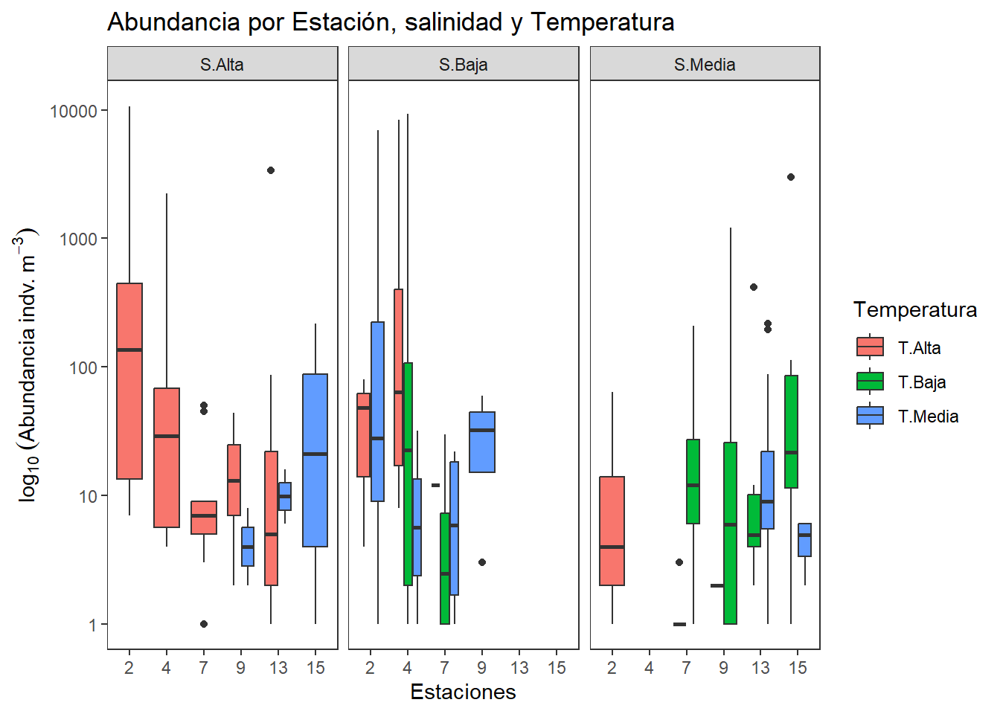
7. Figuras con estadísticos (promedios, errores, …)
Base de datos con múltiples factores
Lo que diferencia a esta base de datos (insectos1.csv) de la anterior (insectos.csv), es que presenta a diferentes variables agrupadoras o factores, como periodos de lluvia, Gruos Funcionales Alimenticios (GF) y Muestreos. Para el siguiente ejercicio se realizará el resumen estadístico de los dos primeros factores.
# Resumen estadístico "datos_resum"
datos_resum <-
biol1 %>% # Base de datos resumida
group_by(Size,Layers) %>% # Factor o variable agrupadora
summarise(datos.m = mean(Ab), # Media de cada grupo del factor
datos.de = sd(Ab), # Desviacioes estándar de cada grupo
datos.var = var(Ab), # Varianzas de cada grupo
n.Biom = n(), # Tamaño de cada grupo
datos.ee = sd(Ab)/sqrt(n())) # Error estándar de cada grupo`summarise()` has grouped output by 'Size'. You can override using the
`.groups` argument.# tabla con los datos
head(datos_resum) %>%
kbl() %>%
kable_classic(full_width = F)| Size | Layers | datos.m | datos.de | datos.var | n.Biom | datos.ee |
|---|---|---|---|---|---|---|
| 250 μm | Profunda | 6175.3333 | 6054.9589 | 36662527.47 | 6 | 2471.92663 |
| 250 μm | Superficial | 1515.0000 | 2015.5865 | 4062588.80 | 6 | 822.85973 |
| 500 μm | Profunda | 228.8333 | 159.4232 | 25415.77 | 6 | 65.08426 |
| 500 μm | Superficial | 3363.6667 | 5180.9455 | 26842196.67 | 6 | 2115.11216 |
Las asignaciones f1 y f2, corresponden a las mismas figuras bifactoriales, en donde la primera se muestra con pocos ajustes de sus ejes y fondo, comparada a la segunda que presenta una mayor edición. Finalmente el comando grid.arrange permite graficar a las dos figuras en un mismo panel.
# Figura 1 (f1)
f1 = ggplot(datos_resum, aes(x=Layers, y=datos.m, fill=Size)) +
geom_bar(stat="identity", color="black",
position=position_dodge()) +
geom_errorbar(aes(ymin=datos.m, ymax=datos.m+datos.de), width=.2,
position=position_dodge(.9))
# f2: Otro formato de figura bifactorial - theme_classic
f2 = f1+labs(title="Abundancia por Capas",
x="Capas de prof.",
y = "Abundancia")+
theme_classic() +
scale_fill_manual(values=c('#E69F00','#999999'))
# Impresión de un panel con las dos figuras de forma horizontal (f1 y f2)
grid.arrange (f1, f2, ncol=2)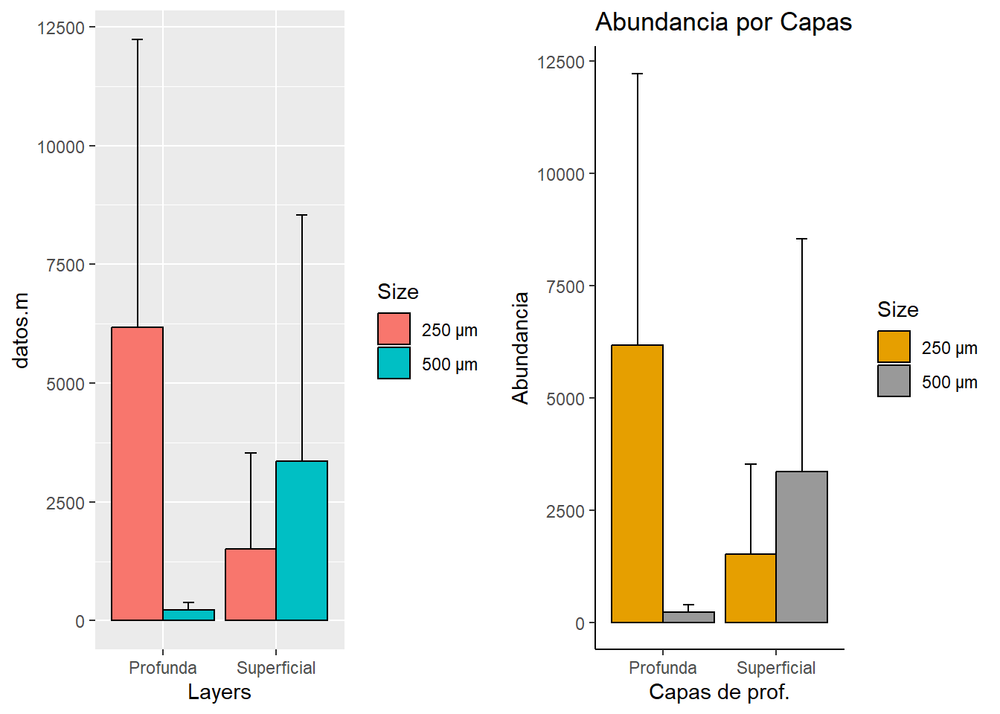
Cambiando la ubicación por columnas ncol por la de filas nrow, se cambia la posición de las figuras anteriores en el mismo panel.
# Impresión de un panel con las dos figuras de forma vertical (p1 y p2)
grid.arrange (f1, f2, nrow=2)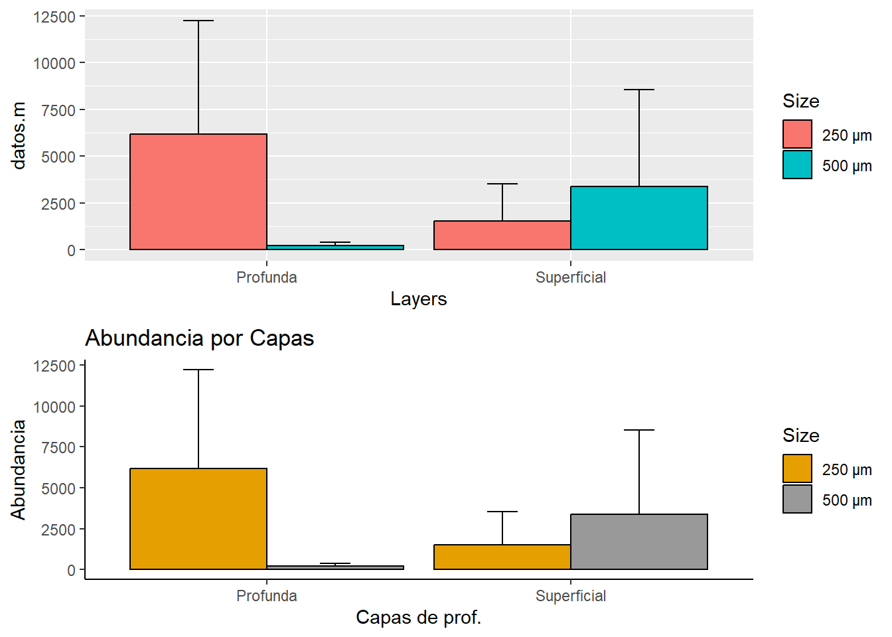
Cuestionario
¿Cómo se distribuye la abundancia total de organismos en las estaciones de muestreo?
¿Cómo varía la abundancia entre diferentes tamaños de malla?
¿Cómo se distribuye la abundancia en las capas de muestreo?
¿Cómo se correlacionan las variables ambientales y biológicas?
¿Existe una relación entre temperatura y abundancia total?
¿Cómo varía la salinidad entre las estaciones de muestreo?
¿Cuál es la relación entre la densidad y la temperatura, para las diferentes capas?
¿Cuál es la relación entre la salinidad y la temperatura, para los diferentes ojos de malla?
¿Cómo varía la abundancia de organismos entre capas?
¿Cómo se distribuye la densidad en las capas?
¿Cómo se agrupan las estaciones según temperatura y salinidad?
¿Cómo se relaciona la abundancia de organismos en relación con la densidad, para las diferentes capas?
¿Cómo varían las estaciones en función de la salinidad y la temperatura?
C. Ejemplo para figuras de burbujas.
Objetivo: Diseñar e interpretar gráficos de burbujas como una herramienta de visualización que integra a diferentes variables, integrando gradientes ambientales y patrones de composición y abundancia para examinar cómo se estructura un ensamblaje en su entorno ambiental.
Referentes con ggplot2: R-charts, Diego Calvo, 2018
# Libraries requeridas para los ejemplos
library(ggplot2)
library(dplyr)
library(readxl)
library(kableExtra)
library(plotly)
library(viridis)
library(hrbrthemes)
library(gapminder)Ejercicio con datos hipotéticos.
En esta primera etapa se utiliza un conjunto de datos pequeño para practicar, paso a paso, la construcción estética del gráfico: la definición de escalas, el control del rango de tamaños, la limpieza del fondo, e incorporación de guías visuales (líneas de referencia) y el manejo de leyendas (externas e internas). Este entrenamiento técnico es clave porque permite comprender cómo cada elemento gráfico afecta la legibilidad y, por tanto, la interpretación.
# install.packages("ggplot2")
library(ggplot2)
# Datos de ejemplo
x <- c(2, 5, 7, 3, 6, 1, 9, 2)
y <- c(2.2, 2, 1, 2, 1, 4, 1, 6)
size <- c(100, 30, 50, 250, 120, 140, 80, 36)
group <- c("A", "A", "A", "B", "C", "B", "D", "B")
group1 <- c("A1", "A2", "A3", "B1", "C1", "B2", "D1", "B2")
# Data frame
datos <- data.frame(x, y, size, group, group1)ggplot(datos, aes(x = x, y = y, size = size, color = group)) +
geom_point() +
scale_size(name = "Tamaño", range = c(1, 10)) +
theme_bw()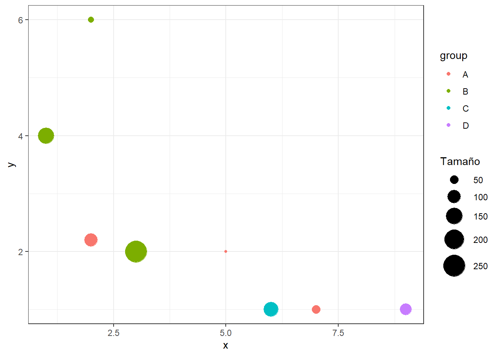
a. Burbujas con leyenda afuera
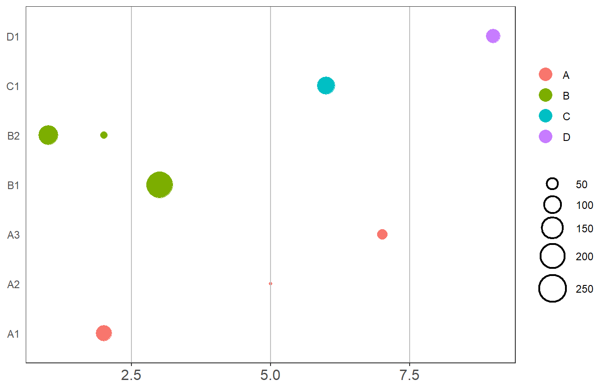
b. Burbujas con leyenda adentro
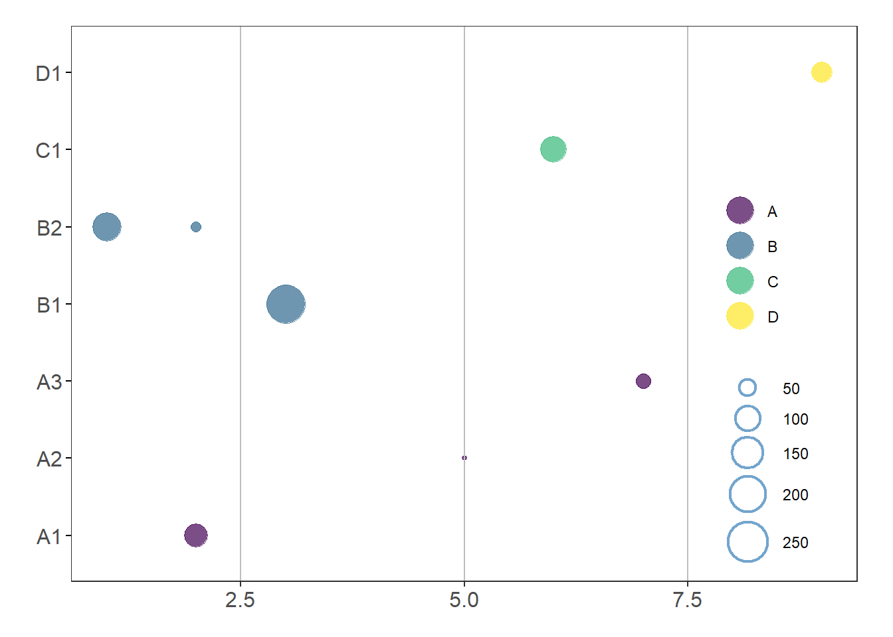
Ejercicio con datos de Plancton Estuarino
Al aplicar el gráfico de burbujas al ejercicio con mesozooplancton estuarino, las figuras adquieren un sentido ecológico más profundo: la salinidad o la temperatura operan como ejes ambientales, los grupos taxonómicos se ordenan según su abundancia total, y el tamaño de cada burbuja refleja la magnitud relativa del ensamblaje. Así, es posible identificar:
Taxones dominantes que mantienen abundancias altas a lo largo del gradiente, sugiriendo tolerancia amplia o ventaja competitiva.
Taxones restringidos a rangos ambientales específicos, compatibles con preferencias ecológicas o limitaciones fisiológicas.
Diferencias entre estaciones, interpretables como cambios espaciales en condiciones ambientales o en procesos locales (descarga continental, mezcla, estratificación).
Posibles umbrales, donde la abundancia cambia de manera marcada a partir de ciertos valores del gradiente.
Carga de datos
A continuación se realiza el ejercicio con los datos del plancton estuarino que se ha trabajado en temáticas anteriores.
# Cargar datos desde Excel
biol <- read_xlsx("plancton.xlsx", sheet = "Riqueza")
# Explorar estructura
# glimpse(biol)
# summary(biol)
# tabla con los datos
head(biol) %>%
kbl(booktabs = TRUE, digits = 2,
longtable = FALSE,
format.args = list(big.mark = ".", decimal.mark = ",")) %>%
kable_classic(full_width = F) %>%
kableExtra::kable_styling(latex_options = c("scale_down", "hold_position")) %>%
kableExtra::row_spec(0, bold = TRUE)| Station | Size | Layers | Groups | Abundance | Temperature | Salinity | Density |
|---|---|---|---|---|---|---|---|
| 2 | 250 μm | Surface | Quetognatos | 0 | 30,30 | 34,70 | 21,42 |
| 2 | 250 μm | Surface | Sergestidae | 0 | 29,41 | 25,83 | 15,09 |
| 2 | 250 μm | Surface | Luciferidae | 0 | 29,59 | 12,39 | 5,73 |
| 2 | 250 μm | Surface | Calanoida | 32 | 30,30 | 34,70 | 21,42 |
| 2 | 250 μm | Surface | Cyclopoida | 4 | 29,41 | 25,83 | 15,09 |
| 2 | 250 μm | Surface | Harpacticoida | 2 | 29,59 | 12,39 | 5,73 |
Burbujas con leyenda afuera (Salinidad)
# Organización de la base de datos
biol <-
biol %>%
# Convertir variables a factores
mutate(across(c(Station, Size, Layers, Groups), as.factor)) %>%
# Abreviar nombres de los grupos taxonómicos
mutate(Abrev = abbreviate(Groups, minlength = 4)) %>%
# Reorganizar las columnas
select(Station, Size, Layers, Temperature, Salinity, Density, Groups, Abrev, Abundance)
# Calcular la Abundancia total por grupo y ordenar taxones
orden_abundancia <- biol %>%
group_by(Groups) %>%
summarise(Total_Abundance = sum(Abundance, na.rm = TRUE)) %>%
arrange(desc(Total_Abundance)) %>%
pull(Groups)
# Aplicar el orden a la variable categórica (invirtiendo el orden para que los más abundantes estén arriba)
biol <- biol %>%
mutate(Groups = factor(Groups, levels = rev(orden_abundancia)),
Abrev = factor(Abrev, levels = rev(abbreviate(orden_abundancia, minlength = 4))))
# Crear el gráfico de burbujas
ggplot(biol, aes(x = Salinity, y = Abrev, size = Abundance, color = Station)) +
geom_point(alpha = 0.7) + # Transparencia para mejor visualización
scale_size(name = "Abundancia", range = c(1, 8)) +
scale_x_continuous(limits = c(10, 35), breaks = seq(10, 35, by = 5)) +
theme_bw() +
theme(
panel.grid = element_blank(),
axis.ticks.y = element_blank(),
axis.text.x = element_text(size = 12),
axis.title.x = element_blank(),
axis.title.y = element_blank(),
legend.position = "right",
legend.direction = "vertical"
) +
# Líneas verticales grises
geom_vline(xintercept = seq(10, 35, by = 5), color = "gray") +
# Circulos de la abundancia en la leyenda
guides(
size = guide_legend(title = NULL,
override.aes = list(shape = 1,
color = "#377eb8",
stroke = 1.2)),
# Circulos de las Layers en la leyenda
color = guide_legend(title = NULL, # Eliminar el título de la leyenda para "group"
override.aes = list(size = 7))
)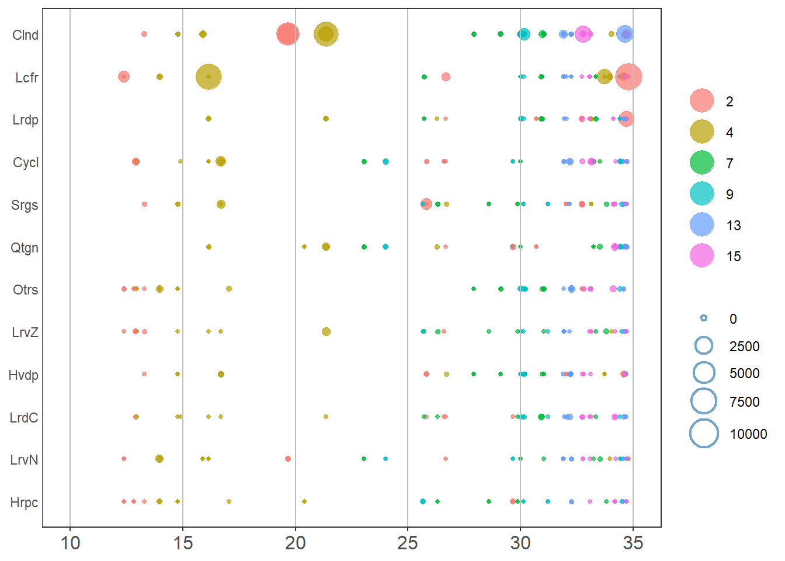
Burbujas con leyenda adentro (Salinidad)
# Crear el gráfico de burbujas
ggplot(biol, aes(x = Salinity, y = Abrev, size = Abundance, color = Station)) +
geom_point(alpha = 0.7) + # Transparencia para mejor visualización
scale_size(name = "Abundancia", range = c(1, 8)) +
scale_x_continuous(limits = c(10, 35), breaks = seq(10, 35, by = 5)) +
scale_color_viridis(discrete=TRUE, guide=FALSE) + # Escala de colores
theme_bw() +
theme(
panel.grid = element_blank(), # Eliminar la cuadrícula del fondo
axis.ticks.y = element_line(color = "black"), # Añadir marcas de graduación en el eje y
axis.text.x = element_text(size = 8), # Ajustar el tamaño del texto en el eje x
axis.text.y = element_text(size = 8), # Ajustar el tamaño del texto en el eje y
axis.title.x = element_blank(), # Quitar el título del eje x
axis.title.y = element_blank(), # Quitar el título del eje y
legend.position = c(0.2, 0.01), # Colocar las leyendas en la parte inferior derecha
legend.justification = c(1, 0), # Ajustar la justificación de las leyendas
legend.direction = "vertical", # Colocar las leyendas en orientación vertical
plot.margin = margin(15, 20, 15, 20), # Aumentar márgenes para evitar solapamiento
) +
# Líneas verticales grises
geom_vline(xintercept = seq(10, 35, by = 5), color = "gray") +
# Circulos de la abundancia en la leyenda
guides(
size = guide_legend(title = NULL,
override.aes = list(shape = 1,
color = "#377eb8",
stroke = 1.2)),
# Circulos de las Layers en la leyenda
color = guide_legend(title = NULL, # Eliminar el título de la leyenda para "group"
override.aes = list(size = 7))
)
Burbujas con leyenda adentro (Temperatura)
# Organización de la base de datos
biol <-
biol %>%
# Convertir variables a factores
mutate(across(c(Station, Size, Layers, Groups), as.factor)) %>%
# Abreviar nombres de los grupos taxonómicos
mutate(Abrev = abbreviate(Groups, minlength = 4)) %>%
# Reorganizar las columnas
select(Station, Size, Layers, Temperature, Salinity,
Density, Groups, Abrev, Abundance)
# Calcular la Abundancia total por grupo y ordenar taxones
orden_abundancia <-
biol %>%
group_by(Groups) %>%
summarise(Total_Abundance = sum(Abundance, na.rm = TRUE)) %>%
arrange(desc(Total_Abundance)) %>%
pull(Groups)
# Aplicar el orden a la variable categórica (invirtiendo el orden para que los más abundantes estén arriba)
biol <-
biol %>%
mutate(Groups = factor(Groups, levels = rev(orden_abundancia)),
Abrev = factor(Abrev, levels = rev(abbreviate(orden_abundancia, minlength = 4))))
# Crear el gráfico de burbujas con Temperature en el eje X
ggplot(biol, aes(x = Temperature, y = Abrev, size = Abundance, color = Station)) +
geom_point(alpha = 0.7) + # Transparencia para mejor visualización
scale_size(name = "Abundancia", range = c(1, 8)) +
scale_x_continuous(limits = c(29, 30),
breaks = seq(29, 30, by = 0.2)) + # Límites y gradación del eje x
scale_color_viridis(discrete=TRUE, guide=FALSE) + # Escala de colores
theme_bw() +
theme(
panel.grid = element_blank(), # Eliminar la cuadrícula del fondo
axis.ticks.y = element_line(color = "black"), # Añadir marcas de graduación en el eje y
axis.text.x = element_text(size = 8), # Ajustar el tamaño del texto en el eje x
axis.text.y = element_text(size = 8), # Ajustar el tamaño del texto en el eje y
axis.title.x = element_blank(), # Quitar el título del eje x
axis.title.y = element_blank(), # Quitar el título del eje y
legend.position = c(0.77, 0.01), # Colocar las leyendas en la parte inferior derecha
legend.justification = c(1, 0), # Ajustar la justificación de las leyendas
legend.direction = "vertical" # Colocar las leyendas en orientación vertical
) +
# Líneas verticales grises
geom_vline(xintercept = seq(floor(min(biol$Temperature, na.rm = TRUE)),
ceiling(max(biol$Temperature, na.rm = TRUE)),
by = 0.2), color = "gray") + # Intervalos para las líneas verticales
# Círculos de la abundancia en la leyenda
guides(
size = guide_legend(title = NULL,
override.aes = list(shape = 1,
color = "#377eb8",
stroke = 1.2)),
# Círculos de las Layers en la leyenda
color = guide_legend(title = NULL, # Eliminar el título de la leyenda para "group"
override.aes = list(size = 6))
)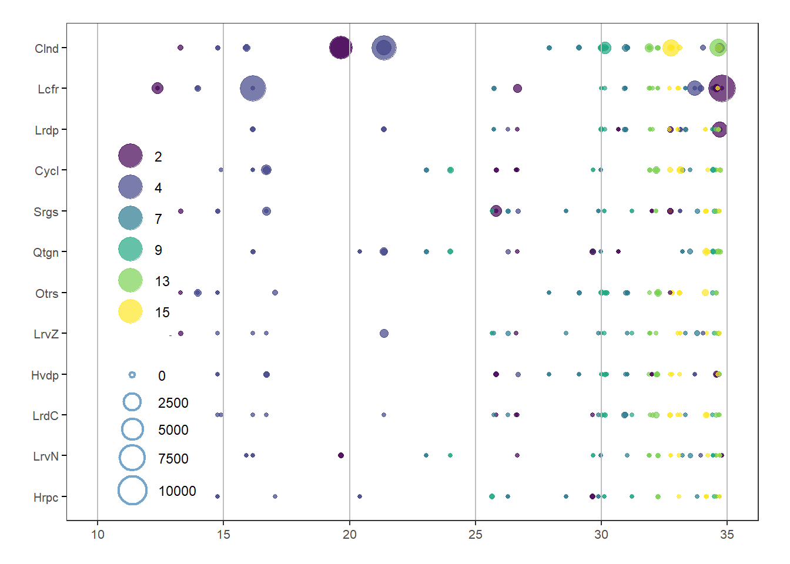
Cuestionario
Responder cada una de las siguientes preguntas resolviendo los ejercicios en R utilizando Tidyverse. Cada pregunta incluye una solución esperada y un análisis del resultado.
- Cargar una base de datos
Cargue la base de datos desde un archivo de Excel y visualice las primeras filas.
Resultado esperado: Se debe observar una estructura clara con variables correctamente identificadas.
- Convertir variables a factores
Transforme las variables “Station”, “Size”, “Layers” y “Groups” en factores.
Análisis: Si las variables fueron correctamente convertidas a factores, aparecerán con la clase “factor” en la estructura de datos.
- Abreviar nombres de grupos
Cree una nueva variable “Abrev” con abreviaciones de los nombres de los grupos taxonómicos.
Resultado esperado: Cada grupo debe tener una abreviatura de al menos 4 caracteres.
- Selección de columnas
Reordene la base de datos para mantener solo variables clave.
Análisis: La base de datos debe contener solo las columnas seleccionadas.
- Ordenar taxones por abundancia
Calcule la abundancia total por grupo y ordénelos.
Resultado esperado: Los taxones deben estar ordenados de mayor a menor abundancia.
- Reorganizar el factor “Groups”
Reordene “Groups” para que los taxones más abundantes aparezcan arriba.
Análisis: Si se visualiza la base de datos, los taxones más abundantes estarán al inicio.
- Crear un gráfico de burbujas
Genere un gráfico de burbujas con “Salinity” en el eje X y “Abrev” en el eje Y.
Resultado esperado: Un gráfico de burbujas con los grupos taxonómicos correctamente representados.
- Mejorar la escala del gráfico
Defina límites e intervalos adecuados para el eje X.
Análisis: Se deben ver intervalos claros en el eje X con valores de 5 en 5.
- Personalizar la leyenda
Ajuste la leyenda del gráfico para mejorar su interpretación.
Resultado esperado: Las leyendas deben tener títulos claros.
- Agregar líneas de referencia
Incluya líneas verticales en los valores 10, 15, 20, 25, 30 y 35.
- Ajustar la transparencia de las burbujas
Modifique el gráfico de burbujas para que las burbujas sean más transparentes (alpha = 0.5).
Resultado esperado: Las burbujas deben verse más translúcidas, facilitando la visualización de puntos superpuestos.
- Modificar la paleta de colores
Modifique el gráfico para que las burbujas permitan mejorar la diferencia entre estaciones con geom_point(alpha = 0.7)
Análisis: La nueva paleta debe permitir una mejor diferenciación entre estaciones.
- Ajustar el rango de tamaños de las burbujas
Modifica la escala de tamaño para que las burbujas pequeñas sean más visibles (range = c(2, 12)).
Resultado esperado: Las burbujas pequeñas serán más visibles y las grandes seguirán resaltando.
- Agregar etiquetas a las burbujas
Incluye etiquetas con los valores de abundancia usando ggrepel para evitar superposiciones.
Análisis: Ahora cada burbuja tendrá una etiqueta con su valor de abundancia.
- Cambiar la orientación de la leyenda
Modifica la posición y orientación de la leyenda (legend.position = "bottom", legend.direction = "horizontal").
Resultado esperado: La leyenda se moverá debajo del gráfico y se presentará en una línea horizontal.
- Agregar una línea de tendencia
Incluye una línea de tendencia suavizada (geom_smooth) para evaluar la relación entre la salinidad y la abundancia media de los grupos.
Análisis: La línea negra mostrará una tendencia general en la relación salinidad-abundancia.
- Crear un gráfico de burbujas animado
Usando la librería plotly, convierta el gráfico en una visualización interactiva.
Resultado esperado: Ahora se podrá interactuar con el gráfico, visualizar valores al pasar el cursor y acercar o alejar el contenido.
Balentina, V., Jhonmar, C., Ramiro, R.-B., Lennin, F.-L., y Javier, R.-B. (2025). Short-Term Variations of Mesozooplankton in a Tropical Estuary, Caribbean Colombia. Wetlands, 45(6), 83. https://doi.org/10.1007/s13157-025-01951-7